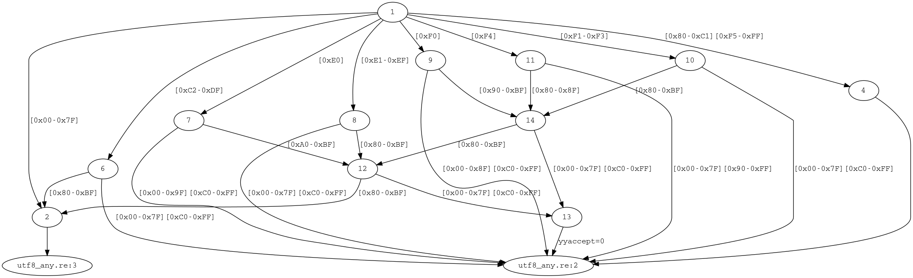

User manual (Zig)¶
Introduction¶
re2zig works as a preprocessor. It reads the input file (which is usually a program in Zig, but can be anything) and looks for blocks of code enclosed in special-form start/end markers. The text outside of these blocks is copied verbatim into the output file. The contents of the blocks are processed by re2zig. It translates them to code in Zig and outputs the generated code in place of the block.
Here is an example of a small program that checks if a given string contains a decimal number:
// re2zig $INPUT -o $OUTPUT
const std = @import("std");
fn lex(yyinput: [:0]const u8) bool {
var yycursor: u32 = 0;
%{
re2c:yyfill:enable = 0;
[1-9][0-9]* { return true; }
* { return false; }
%}
}
test {
try std.testing.expect(lex("1234"));
}
In the output re2zig replaced the middle block with the generated code:
// Generated by re2zig
// re2zig $INPUT -o $OUTPUT
const std = @import("std");
fn lex(yyinput: [:0]const u8) bool {
var yycursor: u32 = 0;
var yych: u8 = 0;
var yystate: u32 = 0;
yyl: while (true) {
switch (yystate) {
0 => {
yych = yyinput[yycursor];
yycursor += 1;
switch (yych) {
0x31...0x39 => {
yystate = 2;
continue :yyl;
},
else => {
yystate = 1;
continue :yyl;
},
}
},
1 => { return false; },
2 => {
yych = yyinput[yycursor];
switch (yych) {
0x30...0x39 => {
yycursor += 1;
yystate = 2;
continue :yyl;
},
else => {
yystate = 3;
continue :yyl;
},
}
},
3 => { return true; },
else => { @panic("internal lexer error"); },
}
}
}
test {
try std.testing.expect(lex("1234"));
}
Basics¶
A re2zig program consists of a sequence of blocks intermixed with code in the target language. A block may contain definitions, configurations, rules, actions and directives in any order:
name = regular-expression ;A definition binds
nametoregular-expression. Names may contain alphanumeric characters and underscore. The regular expressions section gives an overview of re2zig syntax for regular expressions. Once defined, thenamecan be used in other regular expressions and in rules. Recursion in named definitions is not allowed, and each name should be defined before it is used. A block inherits named definitions from the global scope. Redefining a name that exists in the current scope is an error.configuration = value ;A configuration allows one to change re2zig behavior and customize the generated code. For a full list of configurations supported by re2zig see the configurations section. Depending on a particular configuration, the
valuecan be a keyword, a nonnegative integer number or a one-line string which should be enclosed in double or single quotes unless it consists of alphanumeric characters. A block inherits configurations from the global scope and may redefine them or add new ones. Configurations defined inside of a block affect the whole block, even if they appear at the end of it.regular-expression codeA rule binds
regular-expressionto its semantic action (a block of code in curly braces, or a block of code that starts with:=and ends on a newline followed by any non-whitespace character). If theregular-expressionmatches, the associatedcodeis executed. If multiple rules match, the longest match takes precedence. If multiple rules match the same string, the earliest one takes precedence. There are two special rules: the default rule*and the end of input rule$. Default rule should always be defined, it has the lowest priority regardless of its place in the block, and it matches any code unit (not necessarily a valid character, see the encoding support section). The end of input rule should be defined if the corresponding method for handling the end of input is used. With start conditions rules have more complex syntax.!action codeAn action binds a user-defined block of
codeto a particular place in the generated finite state machine (in the same way as semantic actions bind code to the final states). See the actions section for a full list of predefined actions.!directive ;A directive is one of the special predefined statements. Each directive has a unique purpose. See the directives section for details.
Blocks¶
Block start and end markers are either /*!re2c and */, or %{ and
%} (both styles are supported). Starting from version 2.2 blocks may have
optional names that allow them to be referenced in other blocks.
There are different kinds of blocks:
/*!re2c[:<name>] ... */or%{[:<name>] ... %}A global block contains definitions, configurations, rules and directives. re2zig compiles regular expressions associated with each rule into a deterministic finite automaton, encodes it in the form of conditional jumps in the target language and replaces the block with the generated code. Names and configurations defined in a global block are added to the global scope and become visible to subsequent blocks. At the start of the program the global scope is initialized with command-line options.
/*!local:re2c[:<name>] ... */or%{local[:<name>] ... %}A local block is like a global block, but the names and configurations in it have local scope (they do not affect other blocks).
/*!rules:re2c[:<name>] ... */or%{rules[:<name>] ... %}A rules block is like a local block, but it does not generate any code by itself, nor does it add any definitions to the global scope – it is meant to be reused in other blocks. This is a way of sharing code (more details in the reusable blocks section). Prior to re2zig version 2.2 rules blocks required
-r --reusableoption./*!use:re2c[:<name>] ... */or%{use[:<name>] ... %}A use block that references a previously defined rules block. If the name is specified, re2zig looks for a rules blocks with this name. Otherwise the most recent rules block is used (either a named or an unnamed one). A use block can add definitions, configurations and rules of its own, which are added to those of the referenced rules block. Prior to re2zig version 2.2 use blocks required
-r --reusableoption./*!max:re2c[:<name1>[:<name2>...]] ... */or%{max[:<name1>[:<name2>...]] ... %}A block that generates
YYMAXFILLdefinition. An optional list of block names specifies which blocks should be included when computingYYMAXFILLvalue (if the list is empty, all blocks are included). By default the generated code is a macro-definition for C (#define YYMAXFILL <n>), or a global variable for Go (var YYMAXFILL int = <n>). It can be customized with an optional configurationformatthat specifies a template string where@@{max}(or@@for short) is replaced with the numeric value ofYYMAXFILL./*!maxnmatch:re2c[:<name1>[:<name2>...]] ... */or%{maxnmatch[:<name1>[:<name2>...]] ... %}A block that generates
YYMAXNMATCHdefinition (it requires-P --posix-capturesoption). An optional list of block names specifies which blocks should be included when computingYYMAXNMATCHvalue (if the list is empty, all blocks are included). By default the generated code is a macro-definition for C (#define YYMAXNMATCH <n>), or a global variable for Go (var YYMAXNMATCH int = <n>). It can be customized with an optional configurationformatthat specifies a template string where@@{max}(or@@for short) is replaced with the numeric value ofYYMAXNMATCH./*!stags:re2c[:<name1>[:<name2>...]] ... */,/*!mtags:re2c[:<name1>[:<name2>...]] ... */or%{stags[:<name1>[:<name2>...]] ... %},%{mtags[:<name1>[:<name2>...]] ... %{Blocks that specify a template piece of code that is expanded for each s-tag/m-tag variable generated by re2zig. An optional list of block names specifies which blocks should be included when computing the set of tag variables (if the list is empty, all blocks are included). There are two optional configurations:
formatandseparator. Configurationformatspecifies a template string where@@{tag}(or@@for short) is replaced with the name of each tag variable. Configurationseparatorspecifies a piece of code used to join the generatedformatpieces for different tag variables./*!svars:re2c[:<name1>[:<name2>...]] ... */,/*!mvars:re2c[:<name1>[:<name2>...]] ... */or%{svars[:<name1>[:<name2>...]] ... %},%{mvars[:<name1>[:<name2>...]] ... %{Blocks that specify a template piece of code that is expanded for each s-tag/m-tag that is either explicitly mentioned by the rules (with
--tagsoption) or implicitly generated by re2zig (with--captvarsor--posix-captvarsoptions). An optional list of block names specifies which blocks should be included when computing the set of tags (if the list is empty, all blocks are included). There are two optional configurations:formatandseparator. Configurationformatspecifies a template string where@@{tag}(or@@for short) is replaced with the name of each tag. Configurationseparatorspecifies a piece of code used to join the generatedformatpieces for different tags./*!getstate:re2c[:<name1>[:<name2>...]] ... */or%{getstate[:<name1>[:<name2>...]] ... %}A block that generates conditional dispatch on the lexer state (it requires
--storable-stateoption). An optional list of block names specifies which blocks should be included in the state dispatch. The default transition goes to the start label of the first block on the list. If the list is empty, all blocks are included, and the default transition goes to the first block in the file that has a start label. This block type is incompatible with the--loop-switchoption, as it requires cross-block transitions that are unsupported withoutgotoor function calls./*!conditions:re2c[:<name1>[:<name2>...]] ... */,/*!types:re2c... */or%{conditions[:<name1>[:<name2>...]] ... %},%{types... %}A block that generates condition enumeration (it requires
--conditionsoption). An optional list of block names specifies which blocks should be included when computing the set of conditions (if the list is empty, all blocks are included). By default the generated code is an enumerationYYCONDTYPE. It can be customized with optional configurationsformatandseparator. Configurationformatspecifies a template string where@@{cond}(or@@for short) is replaced with the name of each condition, and@@{num}is replaced with a numeric index of that condition. Configurationseparatorspecifies a piece of code used to join the generatedformatpieces for different conditions./*!include:re2c <file> */or%{include <file> %}This block allows one to include
<file>, which must be a double-quoted file path. The contents of the file are literally substituted in place of the block, in the same way as#includeworks in C/C++. This block can be used together with the--depfileoption to generate build system dependencies on the included files./*!header:re2c:on*/or%{header:on %}This block marks the start of header file. Everything after it and up to the following
header:offblock is processed by re2zig and written to the header file specified with-t --type-headeroption./*!header:re2c:off*/or%{header:off %}This block marks the end of header file started with
header:on*/block./*!ignore:re2c ... */or%{ignore ... %}A block which contents are ignored and removed from the output file.
Configurations¶
Here is a full list of configurations supported by re2zig:
re2c:api,re2c:inputSame as the
--apioption.re2c:api:sigilSpecify the marker (“sigil”) that is used for argument placeholders in the API primitives. The default is
@@. A placeholder starts with sigil followed by the argument name in curly braces. For example, if sigil is set to$, then placeholders will have the form${name}. Single-argument APIs may use shorthand notation without the name in braces. This option can be overridden by options for individual API primitives, e.g.re2c:YYFILL@lenforYYFILL.re2c:api:styleSpecify API style. Possible values are
functions(the default for C) andfree-form(the default for Go and Rust). Infunctionsstyle API primitives are generated with an argument list in parentheses following the name of the primitive. The arguments are provided only for autogenerated parameters (such as the number of characters passed toYYFILL), but not for the general lexer context, so the primitives behave more like macros in C/C++ or closures in Go and Rust. In free-form style API primitives do not have a fixed form: they should be defined as strings containing free-form pieces of code with interpolated variables of the form@@{var}or@@(they correspond to arguments in function-like style). This configuration may be overridden for individual API primitives, see for examplere2c:YYFILL:nakedconfiguration forYYFILL.re2c:bit-vectors,re2c:flags:bit-vectors,re2c:flags:bSame as the
--bit-vectorsoption, but can be configured on per-block basis.re2c:captures,re2c:leftmost-capturesSame as the
--leftmost-capturesoption, but can be configured on per-block basis.re2c:captvars,re2c:leftmost-captvarsSame as the
--leftmost-captvarsoption, but can be configured on per-block basis.re2c:case-insensitive,re2c:flags:case-insensitiveSame as the
--case-insensitiveoption, but can be configured on per-block basis.re2c:case-inverted,re2c:flags:case-invertedSame as the
--case-invertedoption, but can be configured on per-block basis.re2c:case-ranges,re2c:flags:case-rangesSame as the
--case-rangesoption, but can be configured on per-block basis.re2c:computed-gotos,re2c:flags:computed-gotos,re2c:flags:gSame as the
--computed-gotosoption, but can be configured on per-block basis.re2c:computed-gotos:relative,re2c:cgoto:relativeSame as the
--computed-gotos-relativeoption, but can be configured on per-block basis.re2c:computed-gotos:threshold,re2c:cgoto:thresholdIf computed
gotois used, this configuration specifies the complexity threshold that triggers the generation of jump tables instead of nestedifstatements and bitmaps. The default value is9.re2c:cond:abortIf set to a positive integer value, the default case in the generated condition dispatch aborts program execution.
re2c:cond:gotoSpecifies a piece of code used for the autogenerated shortcut rules
:=>in conditions. The default isgoto @@;. The@@placeholder is substituted with condition name (see configurationsre2c:api:sigilandre2c:cond:goto@cond).re2c:cond:goto@condSpecifies the sigil used for argument substitution in
re2c:cond:gotodefinition. The default value is@@. Overrides the more genericre2c:api:sigilconfiguration.re2c:cond:dividerDefines the divider for condition blocks. The default value is
/* *********************************** */. Placeholders are substituted with condition name (seere2c:api;sigilandre2c:cond:divider@cond).re2c:cond:divider@condSpecifies the sigil used for argument substitution in
re2c:cond:dividerdefinition. The default is@@. Overrides the more genericre2c:api:sigilconfiguration.re2c:cond:prefix,re2c:condprefixSpecifies the prefix used for condition labels. The default is
yyc_.re2c:cond:enumprefix,re2c:condenumprefixSpecifies the prefix used for condition identifiers. The default is
yyc.re2c:debug-output,re2c:flags:debug-output,re2c:flags:dSame as the
--debug-outputoption, but can be configured on per-block basis.re2c:empty-class,re2c:flags:empty-classSame as the
--empty-classoption, but can be configured on per-block basis.re2c:encoding:ebcdic,re2c:flags:ecb,re2c:flags:eSame as the
--ebcdicoption, but can be configured on per-block basis.re2c:encoding:ucs2,re2c:flags:wide-chars,re2c:flags:wSame as the
--ucs2option, but can be configured on per-block basis.re2c:encoding:utf8,re2c:flags:utf-8,re2c:flags:8Same as the
--utf8option, but can be configured on per-block basis.re2c:encoding:utf16,re2c:flags:utf-16,re2c:flags:xSame as the
--utf16option, but can be configured on per-block basis.re2c:encoding:utf32,re2c:flags:unicode,re2c:flags:uSame as the
--utf32option, but can be configured on per-block basis.re2c:encoding-policy,re2c:flags:encoding-policySame as the
--encoding-policyoption, but can be configured on per-block basis.re2c:eofSpecifies the sentinel symbol used with the end-of-input rule
$. The default value is-1($rule is not used). Other possible values include all valid code units. Only decimal numbers are recognized.re2c:header,re2c:flags:type-header,re2c:flags:tSpecifies the name of the generated header file relative to the directory of the output file. Same as the
--headeroption except that the file path is relative.re2c:indent:stringSpecifies the string used for indentation. The default is a single tab character
"\t". Indent string should contain whitespace characters only. To disable indentation entirely, set this configuration to an empty string.re2c:indent:topSpecifies the minimum amount of indentation to use. The default value is zero. The value should be a non-negative integer number.
re2c:invert-capturesSame as the
--invert-capturesoption, but can be configured on per-block basis.re2c:label:prefix,re2c:labelprefixSpecifies the prefix used for DFA state labels. The default is
yy.re2c:label:start,re2c:startlabelControls the generation of a block start label. The default value is zero, which means that the start label is generated only if it is used. An integer value greater than zero forces the generation of start label even if it is unused by the lexer. A string value also forces start label generation and sets the label name to the specified string. This configuration applies only to the current block (it is reset to default for the next block).
re2c:label:yyFillLabelSpecifies the prefix of
YYFILLlabels used withre2c:eofand in storable state mode.re2c:label:yyloopSpecifies the name of the label marking the start of the lexer loop with
--loop-switchoption. The default isyyloop.re2c:label:yyNextSpecifies the name of the optional label that follows
YYGETSTATEswitch in storable state mode (enabled withre2c:state:nextlabel). The default isyyNext.re2c:lookahead,re2c:flags:lookaheadDeprecated (see the deprecated
--no-lookaheadoption).re2c:monadicIf set to non-zero, the generated lexer will use monadic notation (this configuration is specific to Haskell).
re2c:nested-ifs,re2c:flags:nested-ifs,re2c:flags:sSame as the
--nested-ifsoption, but can be configured on per-block basis.re2c:posix-captures,re2c:flags:posix-captures,re2c:flags:PSame as the
--posix-capturesoption, but can be configured on per-block basis.re2c:posix-captvarsSame as the
--posix-captvarsoption, but can be configured on per-block basis.re2c:tags,re2c:flags:tags,re2c:flags:TSame as the
--tagsoption, but can be configured on per-block basis.re2c:tags:expressionSpecifies the expression used for tag variables. By default re2zig generates expressions of the form
yyt<N>. This might be inconvenient, for example if tag variables are defined as fields in a struct. All occurrences of@@{tag}or@@are replaced with the actual tag name. For example,re2c:tags:expression = "s.@@";results in expressions of the forms.yyt<N>in the generated code. See alsore2c:api:sigilconfiguration.re2c:tags:negativeSpecifies the constant expression that is used for negative tag value (typically this would be
-1if tags are integer offsets in the input string, or null pointer if they are pointers).re2c:tags:prefixSpecifies the prefix for tag variable names. The default is
yyt.re2c:sentinelSpecifies the sentinel symbol used for the end-of-input checks (when bounds checks are disabled with
re2c:yyfill:enable = 0;andre2c:eofis not set). This configuration does not affect code generation: its purpose is to verify that the sentinel is not allowed in the middle of a rule, and ensure that the lexer won’t read past the end of buffer. The default value is -1` (in that case re2zig assumes that the sentinel is zero, which is the most common case). Only decimal numbers are recognized.re2c:state:abortIf set to a positive integer value, the default case in the generated state dispatch aborts program execution, and an explicit
-1case contains transition to the start of the block.re2c:state:nextlabelControls if the
YYGETSTATEswitch is followed by anyyNextlabel (the default value is zero, which corresponds to no label). Alternatively one can usere2c:label:startto generate a specific start label, or an explicitgetstateblock to generate theYYGETSTATEswitch separately from the lexer block.re2c:unsafe,re2c:flags:unsafeSame as the
--no-unsafeoption, but can be configured on per-block basis. If set to zero, it suppresses the generation ofunsafewrappers aroundYYPEEK. The default is non-zero (wrappers are generated). This configuration is specific to Rust.re2c:YYBACKUP,re2c:define:YYBACKUPDefines generic API primitive
YYBACKUP.re2c:YYBACKUPCTX,re2c:define:YYBACKUPCTXDefines generic API primitive
YYBACKUPCTX.re2c:YYCONDTYPE,re2c:define:YYCONDTYPEDefines API primitive
YYCONDTYPE.re2c:YYCTYPE,re2c:define:YYCTYPEDefines API primitive
YYCTYPE.re2c:YYCTXMARKER,re2c:define:YYCTXMARKERDefines API primitive
YYCTXMARKER.re2c:YYCURSOR,re2c:define:YYCURSORDefines API primitive
YYCURSOR.re2c:YYDEBUG,re2c:define:YYDEBUGDefines API primitive
YYDEBUG.re2c:YYFILL,re2c:define:YYFILLDefines API primitive
YYFILL.re2c:YYFILL@len,re2c:define:YYFILL@lenSpecifies the sigil used for argument substitution in
YYFILLdefinition. Defaults to@@. Overrides the more genericre2c:api:sigilconfiguration.re2c:YYFILL:naked,re2c:define:YYFILL:nakedOverrides the more generic
re2c:api:styleconfiguration forYYFILL. Zero value corresponds to free-form API style.re2c:YYFNDefines API primitive
YYFN.re2c:YYINPUTDefines API primitive
YYINPUT.re2c:YYGETCOND,re2c:define:YYGETCONDITIONDefines API primitive
YYGETCOND.re2c:YYGETCOND:naked,re2c:define:YYGETCONDITION:nakedOverrides the more generic
re2c:api:styleconfiguration forYYGETCOND. Zero value corresponds to free-form API style.re2c:YYGETSTATE,re2c:define:YYGETSTATEDefines API primitive
YYGETSTATE.re2c:YYGETSTATE:naked,re2c:define:YYGETSTATE:nakedOverrides the more generic
re2c:api:styleconfiguration forYYGETSTATE. Zero value corresponds to free-form API style.re2c:YYGETACCEPT,re2c:define:YYGETACCEPTDefines API primitive
YYGETACCEPT.re2c:YYLESSTHAN,re2c:define:YYLESSTHANDefines generic API primitive
YYLESSTHAN.re2c:YYLIMIT,re2c:define:YYLIMITDefines API primitive
YYLIMIT.re2c:YYMARKER,re2c:define:YYMARKERDefines API primitive
YYMARKER.re2c:YYMTAGN,re2c:define:YYMTAGNDefines generic API primitive
YYMTAGN.re2c:YYMTAGP,re2c:define:YYMTAGPDefines generic API primitive
YYMTAGP.re2c:YYPEEK,re2c:define:YYPEEKDefines generic API primitive
YYPEEK.re2c:YYRESTORE,re2c:define:YYRESTOREDefines generic API primitive
YYRESTORE.re2c:YYRESTORECTX,re2c:define:YYRESTORECTXDefines generic API primitive
YYRESTORECTX.re2c:YYRESTORETAG,re2c:define:YYRESTORETAGDefines generic API primitive
YYRESTORETAG.re2c:YYSETCOND,re2c:define:YYSETCONDITIONDefines API primitive
YYSETCOND.re2c:YYSETCOND@cond,re2c:define:YYSETCONDITION@condSpecifies the sigil used for argument substitution in
YYSETCONDdefinition. The default value is@@. Overrides the more genericre2c:api:sigilconfiguration.re2c:YYSETCOND:naked,re2c:define:YYSETCONDITION:nakedOverrides the more generic
re2c:api:styleconfiguration forYYSETCOND. Zero value corresponds to free-form API style.re2c:YYSETSTATE,re2c:define:YYSETSTATEDefines API primitive
YYSETSTATE.re2c:YYSETSTATE@state,re2c:define:YYSETSTATE@stateSpecifies the sigil used for argument substitution in
YYSETSTATEdefinition. The default value is@@. Overrides the more genericre2c:api:sigilconfiguration.re2c:YYSETSTATE:naked,re2c:define:YYSETSTATE:nakedOverrides the more generic
re2c:api:styleconfiguration forYYSETSTATE. Zero value corresponds to free-form API style.re2c:YYSETACCEPT,re2c:define:YYSETACCEPTDefines API primitive
YYSETACCEPT.re2c:YYSKIP,re2c:define:YYSKIPDefines generic API primitive
YYSKIP.re2c:YYSHIFT,re2c:define:YYSHIFTDefines generic API primitive
YYSHIFT.re2c:YYCOPYMTAG,re2c:define:YYCOPYMTAGDefines generic API primitive
YYCOPYMTAG.re2c:YYCOPYSTAG,re2c:define:YYCOPYSTAGDefines generic API primitive
YYCOPYSTAG.re2c:YYSHIFTMTAG,re2c:define:YYSHIFTMTAGDefines generic API primitive
YYSHIFTMTAG.re2c:YYSHIFTSTAG,re2c:define:YYSHIFTSTAGDefines generic API primitive
YYSHIFTSTAG.re2c:YYSTAGN,re2c:define:YYSTAGNDefines generic API primitive
YYSTAGN.re2c:YYSTAGP,re2c:define:YYSTAGPDefines generic API primitive
YYSTAGP.re2c:yyaccept,re2c:variable:yyacceptDefines API primitive
yyaccept.re2c:yybm,re2c:variable:yybmDefines API primitive
yybm.re2c:yybm:hex,re2c:variable:yybm:hexIf set to nonzero, bitmaps for the
--bit-vectorsoption are generated in hexadecimal format. The default is zero (bitmaps are in decimal format).re2c:yych,re2c:variable:yychDefines API primitive
yych.re2c:yych:emit,re2c:variable:yych:emitIf set to zero,
yychdefinition is not generated. The default is non-zero.re2c:yych:conversion,re2c:variable:yych:conversionIf set to non-zero, re2zig automatically generates a conversion to
YYCTYPEevery timeyychis read. The default is to zero (no conversion).re2c:yych:literals,re2c:variable:yych:literalsSpecifies the form of literals that
yychis matched against. Possible values are:char(character literals in single quotes, non-printable ones use escape sequences that start with backslash),hex(hexadecimal integers) andchar_or_hex(a mixture of both, character literals for printable characters and hexadecimal integers for others).re2c:yyctable,re2c:variable:yyctableDefines API primitive
yyctable.re2c:yynmatch,re2c:variable:yynmatchDefines API primitive
yynmatch.re2c:yypmatch,re2c:variable:yypmatchDefines API primitive
yypmatch.re2c:yytarget,re2c:variable:yytargetDefines API primitive
yytarget.re2c:yystable,re2c:variable:yystableDeprecated.
re2c:yystate,re2c:variable:yystateDefines API primitive
yystate.re2c:yyfill,re2c:variable:yyfillDefines API primitive
yyfill.re2c:yyfill:checkIf set to zero, suppresses the generation of pre-
YYFILLcheck for the number of input characters (theYYLESSTHANdefinition in generic API and theYYLIMIT-based comparison in C pointer API). The default is non-zero (generate the check).re2c:yyfill:enableIf set to zero, suppresses the generation of
YYFILL(together with the check). This should be used when the whole input fits into one piece of memory (there is no need for buffering) and the end-of-input checks do not rely on theYYFILLchecks (e.g. if a sentinel character is used). Use warnings (-Woption) andre2c:sentinelconfiguration to verify that the generated lexer cannot read past the end of input. The default is non-zero (YYFILLis enabled).re2c:yyfill:parameterIf set to zero, suppresses the generation of parameter passed to
YYFILL. The parameter is the minimum number of characters that must be supplied. Defaults to non-zero (the parameter is generated). This configuration can be overridden withre2c:YYFILL:nakedorre2c:api:style.re2c:yyfn:sepSpecifies separator used in
YYFNelements (defaults to semicolon).re2c:yyfn:throwSpecifies exceptions thrown by
YYFNfunction (defaults to empty, which means no exceptions).
Regular expressions¶
re2zig uses the following syntax for regular expressions:
"foo"Case-sensitive string literal.
'foo'Case-insensitive string literal.
[a-xyz],[^a-xyz]Character class (possibly negated).
.Any character except newline.
R \ SDifference of character classes
RandS.R*Zero or more occurrences of
R.R+One or more occurrences of
R.R?Optional
R.R{n}Repetition of
Rexactlyntimes.R{n,}Repetition of
Rat leastntimes.R{n,m}Repetition of
Rfromntomtimes.(R)Just
R; parentheses are used to override precedence. If submatch extraction is enabled,(R)is a capturing or a non-capturing group depending on--invert-capturesoption.(!R)If submatch extraction is enabled,
(!R)is a non-capturing or a capturing group depending on--invert-capturesoption.R SConcatenation:
Rfollowed byS.R | SAlternative:
R or S.R / SLookahead:
Rfollowed byS, butSis not consumed.nameRegular expression defined as
name(or literal string"name"in Flex compatibility mode).{name}Regular expression defined as
namein Flex compatibility mode.@stagAn s-tag: saves the last input position at which
@stagmatches in a variable namedstag.#mtagAn m-tag: saves all input positions at which
#mtagmatches in a variable namedmtag.$End of input.
Character classes and string literals may contain the following escape
sequences: \a, \b, \f, \n, \r, \t, \v, \\,
octal escapes \ooo and hexadecimal escapes \xhh, \uhhhh and
\Uhhhhhhhh.
Actions¶
Here is a list of predefined actions supported by re2zig:
!entry codeEntry action binds a user-defined block of
codeto the start state of the current finite state machine. If start conditions are used, the entry action can be set individually for each condition. This action may be used to perform initialization, e.g. to save start location of a lexeme.!pre_rule codePre-rule action prepends a user-defined block of
codeto semantic actions of all rules in the current block (or condition, if start conditions are used). This action may be used to factor out the common part of all semantic actions (e.g. saving the end location of a lexeme).!post_rule codePost-rule action appends a user-defined block of
codeto semantic actions of all rules in the current block (or condition, if start conditions are used). This action may be used to emit trap statements that guard against unintended control flow.
Directives¶
Here is a full list of directives supported by re2zig:
!use:name ;An in-block use directive that merges a previously defined rules block with the specified
nameinto the current block. Named definitions, configurations and rules of the referenced block are added to the current ones. Conflicts between overlapping rules and configurations are resolved in the usual way: the first rule takes priority, and the latest configuration overrides the preceding ones. One exception is the special rules*,$and<!>for which a block-local definition always takes priority. A use directive can be placed anywhere inside of a block, and multiple use directives are allowed.!include file ;This directive is the same as
includeblock: it insertsfilecontents verbatim in place of the directive.
Program interface¶
The generated code interfaces with the outer program with the help of primitives, collectively referred to as the API. Which primitives should be defined for a particular program depends on multiple factors, including the complexity of regular expressions, input representation, buffering and the use of various features. All the necessary primitives should be defined by the user in the form of macros, functions, variables or any other suitable form that makes the generated code syntactically and semantically correct. re2zig does not (and cannot) check the definitions, so if anything is missing or defined incorrectly, the generated program may have compile-time or run-time errors. This manual provides examples of API definitions in the most common cases.
re2zig has three API flavors that define the core set of primitives used by a program:
- Simple API
This is the default API for the Zig backend. It consists of the following primitives:
YYINPUT(which should be defined as a sequence of code units, e.g. a string) andYYCURSOR,YYMARKER,YYCTXMARKER,YYLIMIT(which should be defined as indices inYYINPUT).- Record API
Record API is useful in cases when lexer state must be stored in a struct. It is enabled with
--api recordoption orre2c:api = recordconfiguration. This API consists of a variableyyrecord(the name can be overridden withre2c:yyrecord) that should be defined as a struct with fieldsyyinput,yycursor,yymarker,yyctxmarker,yylimit(only the fields used by the generated code need to be defined, and their names can be configured).- Generic API
This is the most flexible API. It is enabled with
--api genericoption orre2c:api = genericconfiguration. It contains primitives for generic operations:YYPEEK,YYSKIP,YYBACKUP,YYBACKUPCTX,YYSTAGP,YYSTAGN,YYMTAGP,YYMTAGN,YYRESTORE,YYRESTORECTX,YYRESTORETAG,YYSHIFT,YYSHIFTSTAG,YYSHIFTMTAG,YYLESSTHAN,YYEND.
Here is a full list of API primitives that may be used by the generated code in order to interface with the outer program.
YYCTYPEThe type of the input characters (code units). For ASCII, EBCDIC and UTF-8 encodings it should be 1-byte unsigned integer. For UTF-16 or UCS-2 it should be 2-byte unsigned integer. For UTF-32 it should be 4-byte unsigned integer.
YYCURSORAn l-value that stores the current input position (a pointer or an integer offset in
YYINPUT). InitiallyYYCURSORshould point to the first input character, and later it is advanced by the generated code. When a rule matches,YYCURSORposition is the one after the last matched character.YYLIMITAn r-value that stores the end of input position (a pointer or an integer offset in
YYINPUT). InitiallyYYLIMITshould point to the position after the last available input character. It is not changed by the generated code. The lexer comparesYYCURSORtoYYLIMITin order to determine if there are enough input characters left.YYMARKERAn l-value that stores the position of the latest matched rule (a pointer or an integer offset in
YYINPUT). It is used to restore theYYCURSORposition if the longer match fails and the lexer needs to rollback. Initialization is not needed.YYCTXMARKERAn l-value that stores the position of the trailing context (a pointer or an integer offset in
YYINPUT). No initialization is needed.YYCTXMARKERis needed only if the lookahead operator/is used.YYFILLA generic API primitive with one variable
len.YYFILLshould provide at leastlenmore input characters or fail. Ifre2c:eofis used, thenlenis always1andYYFILLshould always return to the calling function; zero return value indicates success. Ifre2c:eofis not used, thenYYFILLreturn value is ignored and it should not return on failure. The maximum value oflenisYYMAXFILL.YYFNA primitive that defines function prototype in
--recursive-functionscode model. Its value should be an array of one or more strings, where each string contains two or three components separated by the string specified inre2c:fn:sepconfiguration (typically a semicolon). The first array element defines function name and return type (empty for a void function). Subsequent elements define function arguments: first, the expression for the argument used in function body (usually just a name); second, argument type; third, an optional formal parameter (it defaults to the first component - usually both the argument and the parameter are the same identifier).YYINPUTAn r-value that stores the current input character sequence (string, buffer, etc.).
YYMAXFILLAn integral constant equal to the maximum value of the argument to
YYFILL. It can be generated with amaxblock.YYLESSTHANA generic API primitive with one variable
len. It should be defined as an r-value of boolean type that equalstrueif and only if there are less thanleninput characters left.YYENDA generic API primitive with no variables. It should be defined as an r-value of boolean type that equals
trueif and only if the logical end of input has been reached (excluding any padding or sentinel symbols).YYENDis used to implement$symbol in regular expressions. It differs fromYYLESSTHAN, which is used to ensure that the lexer won’t read past the end of buffer.YYPEEKA generic API primitive with no variables. It should be defined as an r-value of type
YYCTYPEthat is equal to the character at the current input position.YYSKIPA generic API primitive that should advance the current input position by one code unit.
YYBACKUPA generic API primitive that should save the current input position (to be restored with
YYRESTORElater).YYRESTOREA generic API primitive that should restore the current input position to the value saved by
YYBACKUP.YYBACKUPCTXA generic API primitive that should save the current input position as the position of the trailing context (to be restored with
YYRESTORECTXlater).YYRESTORECTXA generic API primitive that should restore the trailing context position saved with
YYBACKUPCTX.YYRESTORETAGA generic API primitive with one variable
tagthat should restore the trailing context position to the value oftag.YYSTAGPA generic API primitive with one variable
tag, wheretagcan be a pointer or an offset inYYINPUT(see submatch extraction section for details).YYSTAGPshould settagto the current input position.YYSTAGNA generic API primitive with one variable
tag, wheretagcan be a pointer or an offset inYYINPUT(see submatch extraction section for details).YYSTAGNshould to settagto a value that represents non-existent input position.YYMTAGPA generic API primitive with one variable
tag.YYMTAGPshould append the current position to the submatch history oftag(see the submatch extraction section for details.)YYMTAGNA generic API primitive with one variable
tag.YYMTAGNshould append a value that represents non-existent input position position to the submatch history oftag(see the submatch extraction section for details.)YYSHIFTA generic API primitive with one variable
shiftthat should shift the current input position byshiftcharacters (the shift value may be negative).YYCOPYSTAGA generic API primitive with two variables,
lhsandrhsthat should copy right-hand-side s-tag variablerhsto the left-hand-side s-tag variablelhs. For most languages this primitive has a default definition that assignslhstorhs.YYCOPYMTAGA generic API primitive with two variables,
lhsandrhsthat should copy right-hand-side m-tag variablerhsto the left-hand-side m-tag variablelhs. For most languages this primitive has a default definition that assignslhstorhs.YYSHIFTSTAGA generic API primitive with two variables,
tagandshiftthat should shifttagbyshiftcode units (the shift value may be negative).YYSHIFTMTAGA generic API primitive with two variables,
tagandshiftthat should shift the latest value in the history oftagbyshiftcode units (the shift value may be negative).YYMAXNMATCHAn integral constant equal to the maximal number of POSIX capturing groups in a rule. It is generated with a
maxnmatchblock.YYCONDTYPEThe type of the condition enum. It can be generated either with
conditionsblock or--headeroption.YYGETACCEPTA primitive with one variable
varthat stores numeric selector of the accepted rule. For most languages this primitive has a default definition that reads fromvar.YYSETACCEPTA primitive with two variables:
var(an l-value that stores numeric selector of the accepted rule), andval(the value of selector). For most languages this primitive has a default definition that assignsvartoval.YYGETCONDAn r-value of type
YYCONDTYPEthat is equal to the current condition identifier.YYSETCONDA primitive with one variable
condthat should set the current condition identifier tocond.YYGETSTATEAn r-value of integer type that is equal to the current lexer state. It should be initialized to
-1.YYSETSTATEA primitive with one variable
statethat should set the current lexer state tostate.YYDEBUGThis primitive is generated only with
-d,--debug-outputoption. Its purpose is to add logging to the generated code (typicalYYDEBUGdefinition is a print statement).YYDEBUGstatements are generated in every state and have two variables:state(either a DFA state index or-1) andsymbol(the current input symbol).yyacceptAn l-value of unsigned integral type that stores the number of the latest matched rule. User definition is necessary only with
--storable-stateoption.yybmA table containing compressed bitmaps for up to 8 transitions (used with the
--bitmapsoption). The table contains 256 elements and is indexed by 1-byte code units. Each 8-bit element combines boolean values for up to 8 transitions. k-Th bit of n-th element is true iff n-th code unit is in the range of k-th transition. The idea of this bitmap is to replace many if branches or switch cases with one check of a single bit in the table.yychAn l-value of type
YYCTYPEthat stores the current input character. User definition is necessary only with-f--storable-stateoption.yyctableJump table generated for the initial condition dispatch (enabled with the combination of
--conditionsand--computed-gotosoptions).yyfillAn l-value that stores the result of
YYFILLcall (this may be necessary for pure functional languages, whereYYFILLis a monadic function with complex return value).yynmatchAn l-value of unsigned integral type that stores the number of POSIX capturing groups in the matched rule. Used only with
-P--posix-capturesoption.yypmatchAn array of l-values that are used to hold the tag values corresponding to the capturing parentheses in the matching rule. Array length must be at least
yynmatch * 2(usuallyYYMAXNMATCH * 2is a good choice). Used only with-P--posix-capturesoption.yystableDeprecated.
yystateAn l-value used with the
--loop-switchoption to store the current DFA state.yytargetJump table that contains jump targets (label addresses) for all transitions from a state. This table is local to each state. Generation of
yytargettables is enabled with--computed-gotosoption.
Options¶
Some of the options have corresponding configurations, others are global and cannot be changed after re2c starts reading the input file. Debug options generally require building re2c in debug configuration. Internal options are useful for experimenting with the algorithms used in re2c.
-? --help -hShow help message.
--api <simple | record | generic>Specify the API used by the generated code to interface with used-defined code. Option
simpleshould be used in simple cases when there’s no need for buffer refilling and storing lexer state. Optionrecordshould be used when lexer state needs to be stored in a record (struct, class, etc.). Optiongenericshould be used in complex cases when the other two APIs are not flexible enough.--bit-vectors -bOptimize conditional jumps using bit masks. This option implies
--nested-ifs.--captures,--leftmost-capturesEnable submatch extraction with leftmost greedy capturing groups. The result is collected into an array
yybmatchof capacity2 * YYMAXNMATCH, andyynmatchis set to the number of groups for the matching rule.--captvars,--leftmost-captvarsEnable submatch extraction with leftmost greedy capturing groups. The result is collected into variables
yytl<k>,yytr<k>fork-th capturing group.--case-insensitiveTreat single-quoted and double-quoted strings as case-insensitive.
--case-invertedInvert the meaning of single-quoted and double-quoted strings: treat single-quoted strings as case-sensitive and double-quoted strings as case-insensitive.
--case-rangesCollapse consecutive cases in a switch statements into a range of the form
low ... high. This syntax is a C/C++ language extension that is supported by compilers like GCC, Clang and Tcc. The main advantage over using single cases is smaller generated code and faster generation time, although for some compilers like Tcc it also results in smaller binary size.--computed-gotos -gOptimize conditional jumps using non-standard “computed goto” extension (which must be supported by the compiler). re2zig generates jump tables only in complex cases with a lot of conditional branches. Complexity threshold can be configured with
cgoto:thresholdconfiguration. Relative offsets can be enabled withcgoto:relativeconfiguration. This option implies--bit-vectors.--computed-gotos-relativeSimilar to –computed-gotos but generate relative offsets for jump tables instead (which must be supported by the compiler). This option implies
--computed-gotos.--conditions --start-conditions -cEnable support of Flex-like “conditions”: multiple interrelated lexers within one block. This is an alternative to manually specifying different re2zig blocks connected with
gotoor function calls.--depfile FILEWrite dependency information to
FILEin the form of a Makefile rule<output-file> : <input-file> [include-file ...]. This allows one to track build dependencies in the presence ofincludeblocks/directives, so that updating include files triggers regeneration of the output file. This option depends on the--outputoption.--ebcdic --ecb -eGenerate a lexer that reads input in EBCDIC encoding. re2zig assumes that the character range is 0 – 0xFF and character size is 1 byte.
--empty-class <match-empty | match-none | error>Define the way re2zig treats empty character classes. With
match-empty(the default) empty class matches empty input (which is illogical, but backwards-compatible). Withmatch-noneempty class always fails to match. Witherrorempty class raises a compilation error.--encoding-policy <fail | substitute | ignore>Define the way re2zig treats Unicode surrogates. With
failre2zig aborts with an error when a surrogate is encountered. Withsubstitutere2zig silently replaces surrogates with the error code point 0xFFFD. Withignore(the default) re2zig treats surrogates as normal code points. The Unicode standard says that standalone surrogates are invalid, but real-world libraries and programs behave in different ways.--flex-syntax -FPartial support for Flex syntax: in this mode named definitions don’t need the equal sign and the terminating semicolon, and when used they must be surrounded with curly braces. Names without curly braces are treated as double-quoted strings.
--goto-labelUse “goto/label” code model: encode DFA in form of labeled code blocks connected with
gototransitions across blocks. This is only supported for languages that have agotostatement.--header --type-header -t HEADERGenerate a
HEADERfile. The contents of the file can be specified using special blocksheader:onandheader:off. If conditions are used, the generated header will have a condition enum automatically appended to it (unless there is an explicitconditionsblock).-I PATHAdd
PATHto the list of locations which are used when searching for include files. This option is useful in combination withincludeblock or directive. re2zig looks forFILEin the directory of the parent file and in the include locations specified with-Ioption.--input <default | custom>Deprecated alias for
--api. Optiondefaultcorresponds tosimple(it is indeed the default for most backends, but not for all). Optioncustomcorresponds togeneric.--input-encoding <ascii | utf8>Specify the way re2zig parses regular expressions. With
ascii(the default) re2zig handles input as ASCII-encoded: any sequence of code units is a sequence of standalone 1-byte characters. Withutf8re2zig handles input as UTF8-encoded and recognizes multibyte characters.--invert-capturesInvert the meaning of capturing and non-capturing groups. By default
(...)is capturing and(! ...)is non-capturing. With this option(! ...)is capturing and(...)is non-capturing.--lang <none | c | d | go | haskell | java | js | ocaml | python | rust | swift | v | zig>Specify the target language. Supported languages are C, D, Go, Haskell, Java, JS, OCaml, Python, Rust, Swift, V, Zig (more languages can be added via user-defined syntax files, see the
--syntaxoption). Optionnonedisables default suntax configs, so that the target language is undefined.--location-format <gnu | msvc>Specify location format in messages. With
gnulocations are printed as ‘filename:line:column: …’. Withmsvclocations are printed as ‘filename(line,column) …’. The default isgnu.--loop-switchUse “loop/switch” code model: encode DFA in form of a loop over a switch statement, where individual states are switch cases. State is stored in a variable
yystate. Transitions between states updateyystateto the case label of the destination state and continue execution to the head of the loop.--nested-ifs -sUse nested
ifstatements instead ofswitchstatements in conditional jumps. This usually results in more efficient code with non-optimizing compilers.--no-debug-info -iDo not output line directives. This may be useful when the generated code is stored in a version control system (to avoid huge autogenerated diffs on small changes).
--no-generation-dateSuppress date output in the generated file.
--no-versionSuppress version output in the generated file.
--no-unsafeDo not generate
unsafewrapper overYYPEEK(this option is specific to Rust). For performance reasonsYYPEEKshould avoid bounds-checking, as the lexer already performs end-of-input checks in a more efficient way. The user may choose to provide a safeYYPEEKdefinition, or a definition that is unsafe only in release builds, in which case the--no-unsafeoption helps to avoid warnings about redundantunsafeblocks.--output -o OUTPUTSpecify the
OUTPUTfile.--posix-captures,-PEnable submatch extraction with POSIX-style capturing groups. The result is collected into an array
yybmatchof capacity2 * YYMAXNMATCH, andyynmatchis set to the number of groups for the matching rule.--posix-captvarsEnable submatch extraction with POSIX-style capturing groups. The result is collected into variables
yytl<k>,yytr<k>fork-th capturing group.--recursive-functionsUse code model based on co-recursive functions, where each DFA state is a separate function that may call other state-functions or itself.
--reusable -rDeprecated since version 2.2 (reusable blocks are allowed by default now).
--skeleton -SIgnore user-defined interface code and generate a self-contained “skeleton” program. Additionally, generate input files with strings derived from the regular grammar and compressed match results that are used to verify “skeleton” behavior on all inputs. This option is useful for finding bugs in optimizations and code generation. This option is supported only for C.
--storable-state -fGenerate a lexer which can store its inner state. This is useful in push-model lexers which are stopped by an outer program when there is not enough input, and then resumed when more input becomes available. In this mode users should additionally define
YYGETSTATEandYYSETSTATEprimitives, and variablesyych,yyacceptandstateshould be part of the stored lexer state.--syntax FILELoad configurations from the specified
FILEand apply them on top of the default syntax file. Note thatFILEcan define only a few configurations (if it’s used to amend the default syntax file), or it can define a whole new language backend (in the latter case it is recommended to use--lang noneoption).--tags -TEnable submatch extraction with tags.
--ucs2 --wide-chars -wGenerate a lexer that reads UCS2-encoded input. re2zig assumes that the character range is 0 – 0xFFFF and character size is 2 bytes. This option implies
--nested-ifs.--utf8 --utf-8 -8Generate a lexer that reads input in UTF-8 encoding. re2zig assumes that the character range is 0 – 0x10FFFF and character size is 1 byte.
--utf16 --utf-16 -xGenerate a lexer that reads UTF16-encoded input. re2zig assumes that the character range is 0 – 0x10FFFF and character size is 2 bytes. This option implies
--nested-ifs.--utf32 --unicode -uGenerate a lexer that reads UTF32-encoded input. re2zig assumes that the character range is 0 – 0x10FFFF and character size is 4 bytes. This option implies
--nested-ifs.--verboseOutput a short message in case of success.
--vernum -VShow version information in
MMmmppformat (major, minor, patch).--version -vShow version information.
--single-pass -1Deprecated. Does nothing (single pass is the default now).
--debug-output -dEmit
YYDEBUGinvocations in the generated code. This is useful to trace lexer execution.--dump-adfaDebug option: output DFA after tunneling (in .dot format).
--dump-cfgDebug option: output control flow graph of tag variables (in .dot format).
--dump-closure-statsDebug option: output statistics on the number of states in closure.
--dump-dfa-detDebug option: output DFA immediately after determinization (in .dot format).
--dump-dfa-minDebug option: output DFA after minimization (in .dot format).
--dump-dfa-tagoptDebug option: output DFA after tag optimizations (in .dot format).
--dump-dfa-treeDebug option: output DFA under construction with states represented as tag history trees (in .dot format).
--dump-dfa-rawDebug option: output DFA under construction with expanded state-sets (in .dot format).
--dump-interfDebug option: output interference table produced by liveness analysis of tag variables.
--dump-nfaDebug option: output NFA (in .dot format).
--emit-dot -DInstead of normal output generate lexer graph in .dot format. The output can be converted to an image with the help of Graphviz (e.g. something like
dot -Tpng -odfa.png dfa.dot).
--dfa-minimization <moore | table>Internal option: DFA minimization algorithm used by re2zig. The
mooreoption is the Moore algorithm (it is the default). Thetableoption is the “table filling” algorithm. Both algorithms should produce the same DFA up to states relabeling; table filling is simpler and much slower and serves as a reference implementation.--eager-skipInternal option: make the generated lexer advance the input position eagerly – immediately after reading the input symbol. This changes the default behavior when the input position is advanced lazily – after transition to the next state.
--no-lookaheadInternal option, deprecated. It used to enable TDFA(0) algorithm. Unlike TDFA(1), TDFA(0) algorithm does not use one-symbol lookahead. It applies register operations to the incoming transitions rather than the outgoing ones. Benchmarks showed that TDFA(0) algorithm is less efficient than TDFA(1).
--no-optimize-tagsInternal option: suppress optimization of tag variables (useful for debugging).
--posix-closure <gor1 | gtop>Internal option: specify shortest-path algorithm used for the construction of epsilon-closure with POSIX disambiguation semantics:
gor1(the default) stands for Goldberg-Radzik algorithm, andgtopstands for “global topological order” algorithm.--posix-prectable <complex | naive>Internal option: specify the algorithm used to compute POSIX precedence table. The
complexalgorithm computes precedence table in one traversal of tag history tree and has quadratic complexity in the number of TNFA states; it is the default. Thenaivealgorithm has worst-case cubic complexity in the number of TNFA states, but it is much simpler thancomplexand may be slightly faster in non-pathological cases.--stadfaInternal option, deprecated. It used to enable staDFA algorithm, which differs from TDFA in that register operations are placed in states rather than on transitions. Benchmarks showed that staDFA algorithm is less efficient than TDFA.
--fixed-tags <none | toplevel | all>Internal option: specify whether the fixed-tag optimization should be applied to all tags (
all), none of them (none), or only those in toplevel concatenation (toplevel). The default isall. “Fixed” tags are those that are located within a fixed distance to some other tag (called “base”). In such cases only the base tag needs to be tracked, and the value of the fixed tag can be computed as the value of the base tag plus a static offset. For tags that are under alternative or repetition it is also necessary to check if the base tag has a no-match value (in that case fixed tag should also be set to no-match, disregarding the offset). For tags in top-level concatenation the check is not needed, because they always match.
Warnings¶
See the warnings page for detailed descriptions of individual warnings.
Warnings can be invividually enabled, disabled and turned into an error.
-WTurn on all warnings.
-WerrorTurn warnings into errors. Note that this option alone doesn’t turn on any warnings; it only affects those warnings that have been turned on so far or will be turned on later.
-W<warning>Turn on
warning.-Wno-<warning>Turn off
warning.-Werror-<warning>Turn on
warningand treat it as an error (this implies-W<warning>).-Wno-error-<warning>Don’t treat this particular
warningas an error. This doesn’t turn off the warning itself.
-Wcondition-orderWarn if the generated program makes implicit assumptions about condition numbering. One should use either
--headeroption orconditionsblock to generate a mapping of condition names to numbers and then use the autogenerated condition names.-Wempty-character-classWarn if a regular expression contains an empty character class. Trying to match an empty character class makes no sense: it should always fail. However, for backwards compatibility reasons re2zig permits empty character classes and treats them as empty strings. Use the
--empty-classoption to change the default behavior.-Wmatch-empty-stringWarn if a rule is nullable (matches an empty string). If the lexer runs in a loop and the empty match is unintentional, the lexer may unexpectedly hang in an infinite loop.
-Wswapped-rangeWarn if the lower bound of a range is greater than its upper bound. The default behavior is to silently swap the range bounds.
-Wundefined-control-flowWarn if some input strings cause undefined control flow in the lexer (the faulty patterns are reported). This is a dangerous and common mistake. It can be easily fixed by adding the default rule
*which has the lowest priority, matches any code unit, and always consumes a single code unit.-Wunreachable-rulesWarn about rules that are shadowed by other rules and will never match.
-Wdeprecated-eof_ruleWarn about standalone end of input rules
$that will be broken by the future changes and require fixing. At the moment these rules take precedence when conflicting with other rules, but after the introduction of generalized end of input symbol$precedence order will change and these rules will become shadowed by other rules.-Wuseless-escapeWarn if a symbol is escaped when it shouldn’t be. By default, re2zig silently ignores such escapes, but this may as well indicate a typo or an error in the escape sequence.
-Wnondeterministic-tagsWarn if a tag has
n-th degree of nondeterminism, wherenis greater than 1.-Wsentinel-in-midruleWarn if the sentinel symbol occurs in the middle of a rule — this may cause reads past the end of buffer, crashes or memory corruption in the generated lexer. This warning is only applicable if the sentinel method of checking for the end of input is used. It is set to an error if
re2c:sentinelconfiguration is used.-Wundefined-syntax-configWarn if the syntax file specified with
--syntaxoption is missing definitions of some configurations. This helps to maintain user-defined syntax files: if a new release adds configurations, old syntax file will raise a warning, and the user will be notified. If some configurations are unused and do not need a definition, they should be explicitly set to<undefined>.
Syntax files¶
Support for different languages in re2c is based on the idea of syntax files.
A syntax file is a configuration file that defines syntax of the target language
– not the whole language, but a small part of it that is used by the generated
code. Syntax files make re2c very flexible, but they should not be used as a
replacement for re2c: configurations: their purpose is to define syntax of
the target language, not to customize one particular lexer. All supported
languages have default syntax files that are part of the distribution (see
include/syntax subdirectory); they are also embedded in the re2zig binary.
Users may provide a custom syntax file that overrides a few configurations for
one of supported languages, or they may choose to redefine all configurations
(in that case --lang none option should be used).
Syntax files contain configurations of four different kinds: feature lists,
language configurations, inplace configurations and code templates.
Feature lists
A few list configurations define various features supported by a given backend, so that re2zig may give a clear error if the user tries to enable an unsupported feature:
supported_apisA list of supported APIs with possible elements
simple,record,generic.supported_api_stylesA list of supported API styles with possible elements
functions,free-form.supported_code_modelsA list of supported code models with possible elements
goto-label,loop-switch,recursive-functions.supported_targetsA list of supported codegen targets with possible elements
code,dot,skeleton.supported_featuresA list of supported features with possible elements
nested-ifs,bitmaps,computed-gotos,case-ranges,monadic,unsafe,tags,captures,captvars.
Language configurations
A few boolean configurations describe features of the target language that affect re2zig parser and code generator:
semicolonsNon-zero if the language uses semicolons after statements.
backtick_quoted_stringsNon-zero if the language has backtick-quoted strings.
single_quoted_stringsNon-zero if the language has single-quoted strings.
indentation_sensitiveNon-zero if the language is indentation sensitive.
wrap_blocks_in_bracesNon-zero if compound statements must be wrapped in curly braces.
Inplace configurations
Syntax files define initial values of all
re2c:configurations, as they may differ for different languages. See configurations section for a full list of all inplace configurations and their meaning.
Code templates
Code templates define syntax of the target language. They are written in a simple domain-specific language with the following formal grammar:
code-template :: name '=' code-exprs ';' | CODE_TEMPLATE ';' | '<undefined>' ';' code-exprs :: <EMPTY> | code-exprs code-expr code-expr :: STRING | VARIABLE | optional | list optional :: '(' CONDITIONAL '?' code-exprs ')' | '(' CONDITIONAL '?' code-exprs ':' code-exprs ')' list :: '[' VARIABLE ':' code-exprs ']' | '[' VARIABLE '{' NUMBER '}' ':' code-exprs ']' | '[' VARIABLE '{' NUMBER ',' NUMBER '}' ':' code-exprs ']'A code template is a sequence of string literals, variables, optional elements and lists, or a reference to another code template, or a special value
<undefined>. Variables are placeholders that are substituted during code generation phase. List variables are special: when expanding list templates, re2zig repeats expressions the right hand side of the column a few times, each time replacing occurrences of the list variable with a value specific to this repetition. Lists have optional bounds (negative values are counted from the end, e.g.-1means the last element). Conditional names start with a dot. Both conditionals and variables may be either local (specific to the given code template) or global (allowed in all code templates). When re2zig reads syntax file, it checks that each code template uses only the variables and conditionals that are allowed in it.For example, the following code template defines if-then-else construct for a C-like language:
code:if_then_else = [branch{0}: topindent "if " cond " {" nl indent [stmt: stmt] dedent] [branch{1:-1}: topindent "} else" (.cond ? " if " cond) " {" nl indent [stmt: stmt] dedent] topindent "}" nl;Here
branchis a list variable:branch{0}expands to the first branch (which is special, as there is noelsepart),branch{1:-1}expands to all remaining branches (if any).stmtis also a list variable:[stmt: stmt]is a nested list that expands to a list of statements in the body of the current branch.topindent,indent,dedentandnlare global variables, and.condis a local conditional (their meaning is described below). This code template could produce the following code:if x { // do something } else if y { // do something else } else { // don't do anything }Here’s a list of all code templates supported by re2zig with their local variables and conditionals. Note that a particular definition may, but does not have to use local variables and conditionals. Any unused code templates should be set to
<undefined>.
code:var_localDeclaration or definition of a local variable. Supported variables:
type(the type of the variable),name(its name) andinit(initial value, if any). Conditionals:.init(true if there is an initializer).code:var_globalSame as
code:var_local, except that it’s used in top-level.code:const_localDefinition of a local constant. Supported variables:
type(the type of the constant),name(its name) andinit(initial value).code:const_globalSame as
code:const_local, except that it’s used in top-level.code:array_localDefinition of a local array (table). Supported variables:
type(the type of array elements),name(array name),size(its size),row(a list variable that does not itself produce any code, but expands list expression as many times as there are rows in the table) andelem(a list variable that expands to all table elements in the current row – it’s meant to be nested in therowlist). Supported conditional:.const(true if the array is immutable).code:array_globalSame as
code:array_local, except that it’s used in top-level.code:array_elemReference to an element of an array (table). Supported variables:
array(the name of the array) andindex(index of the element).code:enumDefinition of an enumeration (it may be defined using a special language construct for enumerations, or simply as a few standalone constants). Supported variables are
type(user-defined enumeration type or type of the constants),elem(list variable that expands to the name of each member) andinit(initializer for each member). Conditionals:.init(true if there is an initializer).code:enum_elemEnumeration element (a member of a user-defined enumeration type or a name of a constant, depending on how
code:enumis defined). Supported variables arename(the name of the element) andtype(its type).code:assignAssignment statement. Supported variables are
lhs(left hand side) andrhs(right hand side).code:type_intSigned integer type.
code:type_uintUnsigned integer type.
code:type_yybmType of elements in the
yybmtable.code:type_yytargetType of elements in the
yytargettable.code:type_yyctableType of elements in the
yyctabletable.code:cmp_eqOperator “equals”.
code:cmp_neOperator “not equals”.
code:cmp_ltOperator “less than”.
code:cmp_gtOperator “greater than”
code:cmp_leOperator “less or equal”
code:cmp_geOperator “greater or equal”
code:if_then_elseIf-then-else statement with one or more branches. Supported variables:
branch(a list variable that does not itself produce any code, but expands list expression as many times as there are branches),cond(condition of the current branch) andstmt(a list variable that expands to all statements in the current branch). Conditionals:.cond(true if the current branch has a condition),.many(true if there’s more than one branch).code:if_then_else_onelineA specialization of
code:if_then_elsefor the case when all branches have one-line statements. If this is<undefined>,code:if_then_elseis used instead.code:switchA switch statement with one or more cases. Supported variables:
expr(the switched-on expression) andcase(a list variable that expands to all cases-groups with their code blocks).code:switch_casesA group of switch cases that maps to a single code block. Supported variables are
case(a list variable that expands to all cases in this group) andstmt(a list variable that expands to all statements in the code block.code:switch_cases_onelineA specialization of
code:switch_casesfor the case when the code block consists of a single one-line statement. If this is<undefined>,code:switch_casesis used instead.code:switch_case_rangeA single switch case that covers a range of values (possibly consisting of a single value). Supported variable:
val(a list variable that expands to all values in the range). Supported conditionals:.many(true if there’s more than one value in the range) and.char_literals(true if this is a switch on character literals – some languages provide special syntax for this case).code:switch_case_defaultDefault switch case.
code:loopA loop that runs forever (unless interrupted from the loop body). Supported variables:
label(loop label),stmt(a list variable that expands to all statements in the loop body).code:continueContinue statement. Supported variables:
label(label from which to continue execution).code:gotoGoto statement. Supported variables:
label(label of the jump target).code:cgotoComputed
gotostatement. Supported variables:array(the table containing computedgotoinformation),index(index of the element in the table) andbase(base label, only used if.cgoto.relativeis true).code:cgoto:dataInitializer expression for a single element in computed
gototable. Supported variables:label(the label that is used to initialize the current element),type(underlying type of the elements in the table) andbase(base label - only used if.cgoto.relativeis true).code:fndeclFunction declaration. Supported variables:
name(function name),type(return type),throw(exceptions thrown by this function, maps tore2c:yyfn:throwconfiguration),arg(a list variable that does not itself produce code, but expands list expression as many times as there are function arguments),argname(name of the current argument),argtype(type of the current argument). Conditional:.type(true if this is a non-void function).code:fndefLike
code:fndecl, but used for function definitions, so it has one additional list variablestmtthat expands to all statements in the function body.code:fncallFunction call statement. Supported variables:
name(function name),retval(l-value where the return value is stored, if any) andarg(a list variable that expands to all function arguments). Conditionals:.args(true if the function has arguments) and.retval(true if return value needs to be saved).code:tailcallTail call statement. Supported variables:
name(function name), andarg(a list variable that expands to all function arguments). Conditionals:.args(true if the function has arguments) and.retval(true if this is a non-void function).code:recursive_functionsProgram body with
--recursive-functionscode model. Supported variables:fn(a list variable that does not itself produce any code, but expands list expression as many times as there are functions),fndecl(declaration of the current function) andfndef(definition of the current function).code:fingerprintThe fingerprint at the top of the generated output file. Supported variables:
ver(re2zig version that was used to generate this) anddate(generation date).code:line_infoThe format of line directives (if this is set to
<undefined>, no directives are generated). Supported variables:line(line number) andfile(filename).code:abortA statement that aborts program execution.
code:yydebug
YYDEBUGstatement, possibly specialized for different APIs. Supported variables:YYDEBUG,yyrecord,yych(map to the correspondingre2c:configurations),state(DFA state number).code:yypeek
YYPEEKstatement, possibly specialized for different APIs. Supported variables:YYPEEK,YYCTYPE,YYINPUT,YYCURSOR,yyrecord,yych(map to the correspondingre2c:configurations). Conditionals:.cast(true ifre2c:yych:conversionis set to non-zero).code:yyskip
YYSKIPstatement, possibly specialized for different APIs. Supported variables:YYSKIP,YYCURSOR,yyrecord(map to the correspondingre2c:configurations).code:yybackup
YYBACKUPstatement, possibly specialized for different APIs. Supported variables:YYBACKUP,YYCURSOR,YYMARKER,yyrecord(map to the correspondingre2c:configurations).code:yybackupctx
YYBACKUPCTXstatement, possibly specialized for different APIs. Supported variables:YYBACKUPCTX,YYCURSOR,YYCTXMARKER,yyrecord(map to the correspondingre2c:configurations).code:yyskip_yypeekCombined
code:yyskipandcode:yypeekstatement (defaults tocode:yyskipfollowed bycode:yypeek).code:yypeek_yyskipCombined
code:yypeekandcode:yyskipstatement (defaults tocode:yypeekfollowed bycode:yyskip).code:yyskip_yybackupCombined
code:yyskipandcode:yybackupstatement (defaults tocode:yyskipfollowed bycode:yybackup).code:yybackup_yyskipCombined
code:yybackupandcode:yyskipstatement (defaults tocode:yybackupfollowed bycode:yyskip).code:yybackup_yypeekCombined
code:yybackupandcode:yypeekstatement (defaults tocode:yybackupfollowed bycode:yypeek).code:yyskip_yybackup_yypeekCombined
code:yyskip,code:yybackupandcode:yypeekstatement (defaults to``code:yyskip`` followed bycode:yybackupfollowed bycode:yypeek).code:yybackup_yypeek_yyskipCombined
code:yybackup,code:yypeekandcode:yyskipstatement (defaults to``code:yybackup`` followed bycode:yypeekfollowed bycode:yyskip).code:yyrestore
YYRESTOREstatement, possibly specialized for different APIs. Supported variables:YYRESTORE,YYCURSOR,YYMARKER,yyrecord(map to the correspondingre2c:configurations).code:yyrestorectx
YYRESTORECTXstatement, possibly specialized for different APIs. Supported variables:YYRESTORECTX,YYCURSOR,YYCTXMARKER,yyrecord(map to the correspondingre2c:configurations).code:yyrestoretag
YYRESTORETAGstatement, possibly specialized for different APIs. Supported variables:YYRESTORETAG,YYCURSOR,yyrecord(map to the correspondingre2c:configurations),tag(the name of tag variable used to restore position).code:yyshift
YYSHIFTstatement, possibly specialized for different APIs. Supported variables:YYSHIFT,YYCURSOR,yyrecord(map to the correspondingre2c:configurations),offset(the number of code units to shift the current position).code:yyshiftstag
YYSHIFTSTAGstatement, possibly specialized for different APIs. Supported variables:YYSHIFTSTAG,yyrecord,negative(map to the correspondingre2c:configurations),tag(tag variable which needs to be shifted),offset(the number of code units to shift). Conditionals:.nested(true if this is a nested tag – in this case its value may equal tore2c:tags:negative, which should not be shifted).code:yyshiftmtag
YYSHIFTMTAGstatement, possibly specialized for different APIs. Supported variables:YYSHIFTMTAG(maps to the correspondingre2c:configuration),tag(tag variable which needs to be shifted),offset(the number of code units to shift).code:yystagp
YYSTAGPstatement, possibly specialized for different APIs. Supported variables:YYSTAGP,YYCURSOR,yyrecord(map to the correspondingre2c:configurations),tag(tag variable that should be updated).code:yymtagp
YYMTAGPstatement, possibly specialized for different APIs. Supported variables:YYMTAGP(maps to the correspondingre2c:configuration),tag(tag variable that should be updated).code:yystagn
YYSTAGNstatement, possibly specialized for different APIs. Supported variables:YYSTAGN,negative,yyrecord(map to the correspondingre2c:configurations),tag(tag variable that should be updated).code:yymtagn
YYMTAGNstatement, possibly specialized for different APIs. Supported variables:YYMTAGN(maps to the correspondingre2c:configuration),tag(tag variable that should be updated).code:yycopystag
YYCOPYSTAGstatement, possibly specialized for different APIs. Supported variables:YYCOPYSTAG,yyrecord(map to the correspondingre2c:configurations),lhs,rhs(left and right hand side tag variables of the copy operation).code:yycopymtag
YYCOPYMTAGstatement, possibly specialized for different APIs. Supported variables:YYCOPYMTAG,yyrecord(map to the correspondingre2c:configurations),lhs,rhs(left and right hand side tag variables of the copy operation).code:yygetaccept
YYGETACCEPTstatement, possibly specialized for different APIs. Supported variables:YYGETACCEPT,yyrecord(map to the correspondingre2c:configurations),var(maps tore2c:yyacceptconfiguration).code:yysetaccept
YYSETACCEPTstatement, possibly specialized for different APIs. Supported variables:YYSETACCEPT,yyrecord(map to the correspondingre2c:configurations),var(maps tore2c:yyacceptconfiguration) andval(numeric value of the accepted rule).code:yygetcond
YYGETCONDstatement, possibly specialized for different APIs. Supported variables:YYGETCOND,yyrecord(map to the correspondingre2c:configurations),var(maps tore2c:yycondconfiguration).code:yysetcond
YYSETCONDstatement, possibly specialized for different APIs. Supported variables:YYSETCOND,yyrecord(map to the correspondingre2c:configurations),var(maps tore2c:yycondconfiguration) andval(numeric condition identifier).code:yygetstate
YYGETSTATEstatement, possibly specialized for different APIs. Supported variables:YYGETSTATE,yyrecord(map to the correspondingre2c:configurations),var(maps tore2c:yystateconfiguration).code:yysetstate
YYSETSTATEstatement, possibly specialized for different APIs. Supported variables:YYSETSTATE,yyrecord(map to the correspondingre2c:configurations),var(maps tore2c:yystateconfiguration) andval(state number).code:yylessthan
YYLESSTHANstatement, possibly specialized for different APIs. Supported variables:YYLESSTHAN,YYCURSOR,YYLIMIT,yyrecord(map to the correspondingre2c:configurations),need(the number of code units to check against). Conditional:.many(true if theneedis more than one).code:yyend
YYENDexpression, possibly specialized for different APIs. Supported variables:YYEND,YYCURSOR,YYLIMIT.code:yybm_filterCondition that is used to filter out
yychvalues that are not covered by theyybmtable (used with--bitmapsoption). Supported variable:yych(maps tore2c:yychconfiguration).code:yybm_matchThe format of
yybmtable check (generated with--bitmapsoption). Supported variables:yybm,yych(map to the correspondingre2c:configurations),offset(offset in theyybmtable that needs to be added toyych) andmask(bit mask that should be applied to the table entry to retrieve the boolean value that needs to be checked)code:yytarget_filterCondition that is used to filter out
yychvalues that are not covered by theyytargettable (used with--computed-gotosoption). Supported variable:yych(maps tore2c:yychconfiguration).Here’s a list of all global variables that are allowed in syntax files:
nlA newline.
indentA variable that does not produce any code, but has a side-effect of increasing indentation level.
dedentA variable that does not produce any code, but has a side-effect of decreasing indentation level.
topindentIndentation string for the current statement. Indentation level is tracked and automatically updated by the code generator.
Here’s a list of all global conditionals that are allowed in syntax files:
.api.simpleTrue if simple API is used (
--api simpleorre2c:api = simple)..api.genericTrue if generic API is used (
--api genericorre2c:api = generic)..api.recordTrue if record API is used (
--api recordorre2c:api = record)..api_style.functionsTrue if function-like API style is used (
re2c:api-style = functions)..api_style.freeformTrue if free-form API style is used (
re2c:api-style = free-form)..case_rangesTrue if case ranges feature is enabled (
--case-rangesorre2c:case-ranges = 1)..cgoto.relativeTrue if the relative form of computed
gotois used (--computed-gotos-relativeorre2c:cgoto:relative = 1)..code_model.goto_labelTrue if code model based on goto/label is used (
--goto-label)..code_model.loop_switchTrue if code model based on loop/switch is used (
--loop-switch)..code_model.recursive_functionsTrue if code model based on recursive functions is used (
--recursive-function)..dateTrue if the generated fingerprint should contain generation date.
.loop_labelTrue if re2zig generated loops must have a label (
re2c:label:yyloopis set to a nonempty string)..monadicTrue if the generated code should be monadic (
re2c:monadic = 1). This is only relevant for pure functional languages..start_conditionsTrue if start conditions are enabled (
--start-conditions)..storable_stateTrue if storable state is enabled (
--storable-state)..unsafeTrue if re2zig should use “unsafe” blocks in order to generate faster code (
--unsafe,re2c:unsafe = 1). This is only relevant for languages that have “unsafe” feature..versionTrue if the generated fingerprint should contain re2zig version.
.yyfill.enableTrue if
YYFILLis enabled (re2c:yyfill:enable = 1)..yyfn.throwTrue if
re2c:yyfn:throwconfiguration is defined to a nonempty string.
Handling the end of input¶
One of the main problems for the lexer is to know when to stop. There are a few terminating conditions:
the lexer may match some rule (including default rule
*) and come to a final statethe lexer may fail to match any rule and come to a default state
the lexer may reach the end of input
The first two conditions terminate the lexer in a “natural” way: it comes to a state with no outgoing transitions, and the matching automatically stops. The third condition, end of input, is different: it may happen in any state, and the lexer should be able to handle it. Checking for the end of input interrupts the normal lexer workflow and adds conditional branches to the generated program, therefore it is necessary to minimize the number of such checks. re2zig supports a few different methods for handling the end of input. Which one to use depends on the complexity of regular expressions, the need for buffering, performance considerations and other factors. Here is a list of methods:
Sentinel. This method eliminates the need for the end of input checks altogether. It is simple and efficient, but limited to the case when there is a natural “sentinel” character that can never occur in valid input. This character may still occur in invalid input, but it should not be allowed by the regular expressions, except perhaps as the last character of a rule. The sentinel is appended at the end of input and serves as a stop signal: when the lexer reads this character, it is either a syntax error or the end of input. In both cases the lexer should stop. This method is used if
YYFILLis disabled withre2c:yyfill:enable = 0;andre2c:eofhas the default value-1.Sentinel with bounds checks. This method is generic: it allows one to handle any input without restrictions on the regular expressions. The idea is to reduce the number of end of input checks by performing them only on certain characters. Similar to the “sentinel” method, one of the characters is chosen as a “sentinel” and appended at the end of input. However, there is no restriction on where the sentinel may occur (in fact, any character can be chosen for a sentinel). When the lexer reads this character, it additionally performs a bounds check. If the current position is within bounds, the lexer resumes matching and handles the sentinel as a regular character. Otherwise it invokes
YYFILL(unless it is disabled). If more input is supplied, the lexer will rematch the last character and continue as if the sentinel wasn’t there. Otherwise it must be the real end of input, and the lexer stops. This method is used whenre2c:eofhas non-negative value (it should be set to the numeric value of the sentinel).YYFILLis optional.Bounds checks with padding. This method is generic, and it may be faster than the “sentinel with bounds checks” method, but it is also more complex. The idea is to partition DFA states into strongly connected components (SCCs) and generate a single check per SCC for enough characters to cover the longest non-looping path in this SCC. This reduces the number of checks, but there is a problem with short lexemes at the end of input, as the check requires enough characters to cover the longest lexeme. This can be fixed by padding the input with a few fake characters that do not form a valid lexeme suffix (so that the lexer cannot match them). The length of padding should be
YYMAXFILL, generated with amaxblock. If there is not enough input, the lexer invokesYYFILLwhich should supply at least the required number of characters or not return. This method is used ifYYFILLis enabled andre2c:eofis-1(this is the default configuration).Custom checks. Generic API allows one to override basic operations like reading a character, which makes it possible to include the end-of-input checks as part of them. This approach is error-prone and should be used with caution. To use a custom method, enable generic API with
--api customorre2c:api = custom;and disable default bounds checks withre2c:yyfill:enable = 0;orre2c:yyfill:check = 0;.
The following subsections contain an example of each method.
Sentinel¶
This example uses a sentinel character to handle the end of input. The program
counts space-separated words in a null-terminated string. The sentinel is null:
it is the last character of each input string, and it is not allowed in the
middle of a lexeme by any of the rules (in particular, it is not included in
character ranges where it is easy to overlook). If a null occurs in the middle
of a string, it is a syntax error and the lexer will match default rule *,
but it won’t read past the end of input or crash (use
-Wsentinel-in-midrule
warning and re2c:sentinel configuration to verify this). Configuration
re2c:yyfill:enable = 0; suppresses the generation of bounds checks and
YYFILL invocations.
// re2zig $INPUT -o $OUTPUT
const std = @import("std");
// Expects a null-terminated string.
fn lex(yyinput: [:0]const u8) i32 {
var yycursor: u32 = 0;
var count: i32 = 0;
loop: while (true) {
%{
re2c:yyfill:enable = 0;
* { return -1; }
[\x00] { return count; }
[a-z]+ { count += 1; continue :loop; }
[ ]+ { continue :loop; }
%}
}
}
test {
try std.testing.expectEqual(lex(""), 0);
try std.testing.expectEqual(lex("one two three"), 3);
try std.testing.expectEqual(lex("f0ur"), -1);
}
Sentinel with bounds checks¶
This example uses sentinel with bounds checks to handle the end of input (this
method was added in version 1.2). The program counts space-separated
single-quoted strings. The sentinel character is null, which is specified with
re2c:eof = 0; configuration. As in the sentinel method, null is the last
character of each input string, but it is allowed in the middle of a rule (for
example, 'aaa\0aa'\0 is valid input, but 'aaa\0 is a syntax error).
Bounds checks are generated in each state that matches an input character, but
they are scoped to the branch that handles null. Bounds checks are of the form
YYLIMIT <= YYCURSOR or YYLESSTHAN(1) with generic API. If the check
condition is true, lexer has reached the end of input and should stop
(YYFILL is disabled with re2c:yyfill:enable = 0; as the input fits into
one buffer, see the YYFILL with sentinel section for an example that uses
YYFILL). Reaching the end of input opens three possibilities: if the lexer
is in the initial state it will match the end-of-input rule $, otherwise it
may fallback to a previously matched rule (including default rule *) or go
to a default state, causing
-Wundefined-control-flow.
// re2zig $INPUT -o $OUTPUT
const std = @import("std");
// Expects a null-terminated string.
fn lex(yyinput: [:0]const u8) i32 {
var yycursor: usize = 0;
var yymarker: usize = 0;
const yylimit: usize = yyinput.len; // points at the terminating null
var count: i32 = 0;
loop: while (true) {
%{
re2c:yyfill:enable = 0;
re2c:eof = 0;
str = ['] ([^'\\] | [\\][^])* ['];
* { return -1; }
$ { return count; }
str { count += 1; continue :loop; }
[ ]+ { continue :loop; }
%}
}
}
test {
try std.testing.expectEqual(lex(""), 0);
try std.testing.expectEqual(lex("'qu\x00tes' 'are' 'fine: \\'' "), 3);
try std.testing.expectEqual(lex("'unterminated\\'"), -1);
}
Bounds checks with padding¶
This example uses bounds checks with padding to handle the end of input (this
method is enabled by default). The program counts space-separated single-quoted
strings. There is a padding of YYMAXFILL null characters appended at the end
of input, where YYMAXFILL value is autogenerated with a max block. It
is not necessary to use null for padding — any characters can be used as long
as they do not form a valid lexeme suffix (in this example padding should not
contain single quotes, as they may be mistaken for a suffix of a single-quoted
string). There is a “stop” rule that matches the first padding character (null)
and terminates the lexer (note that it checks if null is at the beginning of
padding, otherwise it is a syntax error). Bounds checks are generated only in
some states that are determined by the strongly connected components of the
underlying automaton. Checks have the form (YYLIMIT - YYCURSOR) < n or
YYLESSTHAN(n) with generic API, where n is the minimum number of
characters that are needed for the lexer to proceed (it also means that the next
bounds check will occur in at most n characters). If the check condition is
true, the lexer has reached the end of input and will invoke YYFILL(n) that
should either supply at least n input characters or not return. In this
example YYFILL always fails and terminates the lexer with an error (which is
fine because the input fits into one buffer). See the YYFILL with padding
section for an example that refills the input buffer with YYFILL.
// re2zig $INPUT -o $OUTPUT
const std = @import("std");
%{max %}
fn lex(str: []const u8) !i32 {
// Create a copy of the input string padded with yymaxfill zeroes at the end.
var yyinput = try std.testing.allocator.alloc(u8, str.len + yymaxfill);
defer std.testing.allocator.free(yyinput);
std.mem.copyForwards(u8, yyinput[0..], str);
std.mem.copyForwards(u8, yyinput[str.len..], &[_]u8{0} ** yymaxfill); // zero padding
var yycursor: usize = 0;
const yylimit: usize = yyinput.len;
var count: i32 = 0;
loop: while (true) {
%{
re2c:YYFILL = "return -1;";
str = ['] ([^'\\] | [\\][^])* ['];
[\x00] {
// Check that it is the sentinel, not some unexpected null.
return if (yycursor - 1 == str.len) count else -1;
}
str { count += 1; continue :loop; }
[ ]+ { continue :loop; }
* { return -1; }
%}
}
}
test {
try std.testing.expectEqual(lex(""), 0);
try std.testing.expectEqual(lex("'qu\x00tes' 'are' 'fine: \\'' "), 3);
try std.testing.expectEqual(lex("'unterminated\\'"), -1);
try std.testing.expectEqual(lex("'unexpected \x00 null\\'"), -1);
}
Custom checks¶
This example uses a custom end-of-input handling method based on generic API.
The program counts space-separated single-quoted strings. It is the same as the
sentinel example, except that the input is not null-terminated. To cover up
for the absence of a sentinel character at the end of input, YYPEEK is
redefined to perform a bounds check before it reads the next input character.
This is inefficient because checks are done very often. If the check condition
fails, YYPEEK returns the real character, otherwise it returns a fake
sentinel character.
// re2zig $INPUT -o $OUTPUT
const std = @import("std");
// Expects a string without terminating null.
fn lex(str: []const u8) i32 {
var cur: usize = 0;
var count: i32 = 0;
loop: while (true) {
%{
re2c:api = generic;
re2c:yyfill:enable = 0;
// YYPEEK returns "fake" terminating null if cursor has reached limit.
re2c:YYPEEK = "if (cur >= str.len) 0 else str[cur]";
re2c:YYSKIP = "cur += 1;";
* { return -1; }
[\x00] { return count; }
[a-z]+ { count += 1; continue :loop; }
[ ]+ { continue :loop; }
%}
}
}
test {
try std.testing.expectEqual(lex(""), 0);
try std.testing.expectEqual(lex("one two three"), 3);
try std.testing.expectEqual(lex("f0ur"), -1);
}
Buffer refilling¶
The need for buffering arises when the input cannot be mapped in memory all at once: either it is too large, or it comes in a streaming fashion (like reading from a socket). The usual technique in such cases is to allocate a fixed-sized memory buffer and process input in chunks that fit into the buffer. When the current chunk is processed, it is moved out and new data is moved in. In practice it is somewhat more complex, because lexer state consists not of a single input position, but a set of interrelated positions:
cursor: the next input character to be read (
YYCURSORin C pointer API orYYSKIP/YYPEEKin generic API)limit: the position after the last available input character (
YYLIMITin C pointer API, implicitly handled byYYLESSTHANin generic API)marker: the position of the most recent match, if any (
YYMARKERin default API orYYBACKUP/YYRESTOREin generic API)token: the start of the current lexeme (implicit in re2zig API, as it is not needed for the normal lexer operation and can be defined and updated by the user)
context marker: the position of the trailing context (
YYCTXMARKERin C pointer API orYYBACKUPCTX/YYRESTORECTXin generic API)tag variables: submatch positions (defined with
stagsandmtagsblocks and generic API primitivesYYSTAGP/YYSTAGN/YYMTAGP/YYMTAGN)
Not all these are used in every case, but if used, they must be updated by
YYFILL. All active positions are contained in the segment between token and
cursor, therefore everything between buffer start and token can be discarded,
the segment from token and up to limit should be moved to the beginning of
buffer, and the free space at the end of buffer should be filled with new data.
In order to avoid frequent YYFILL calls it is best to fill in as many input
characters as possible (even though fewer characters might suffice to resume the
lexer). The details of YYFILL implementation are slightly different
depending on which EOF handling method is used: the case of EOF rule is somewhat
simpler than the case of bounds-checking with padding. Also note that if
-f --storable-state option is used, YYFILL has slightly different
semantics (described in the section about storable state).
YYFILL with sentinel¶
If EOF rule is used, YYFILL is a function-like primitive that accepts
no arguments and returns a value which is checked against zero. YYFILL
invocation is triggered by condition YYLIMIT <= YYCURSOR in C pointer API and
YYLESSTHAN() in generic API. A non-zero return value means that YYFILL
has failed. A successful YYFILL call must supply at least one character and
adjust input positions accordingly. Limit must always be set to one after the
last input position in buffer, and the character at the limit position must be
the sentinel symbol specified by re2c:eof configuration. The pictures below
show the relative locations of input positions in buffer before and after
YYFILL call (sentinel symbol is marked with #, and the second picture
shows the case when there is not enough input to fill the whole buffer).
<-- shift -->
>-A------------B---------C-------------D#-----------E->
buffer token marker limit,
cursor
>-A------------B---------C-------------D------------E#->
buffer, marker cursor limit
token
<-- shift -->
>-A------------B---------C-------------D#--E (EOF)
buffer token marker limit,
cursor
>-A------------B---------C-------------D---E#........
buffer, marker cursor limit
token
Here is an example of a program that reads input file input.txt in chunks of
4096 bytes and uses EOF rule.
// re2zig $INPUT -o $OUTPUT
const std = @import("std");
const bufsize = 4095;
const State = struct {
file: *std.Io.Reader,
yyinput: [bufsize + 1]u8,
yycursor: usize,
yymarker: usize,
yylimit: usize,
token: usize,
eof: bool
};
fn fill(st: *State) i32 {
if (st.eof) { return -1; } // unexpected EOF
// Error: lexeme too long. In real life can reallocate a larger buffer.
if (st.token < 1) { return -2; }
// Shift buffer contents (discard everything up to the current token).
std.mem.copyBackwards(
u8, st.yyinput[0..st.yylimit - st.token], st.yyinput[st.token..st.yylimit]);
st.yycursor -= st.token;
st.yymarker = @subWithOverflow(st.yymarker, st.token)[0];
st.yylimit -= st.token;
st.token = 0;
// Fill free space at the end of buffer with new data from file.
st.yylimit += st.file.readSliceShort(st.yyinput[st.yylimit..bufsize]) catch 0;
st.yyinput[st.yylimit] = 0; // append sentinel symbol
// If read less than expected, this is the end of input.
st.eof = st.yylimit < bufsize;
return 0;
}
fn lex(yyrecord: *State) i32 {
var count: i32 = 0;
loop: while (true) {
yyrecord.token = yyrecord.yycursor;
%{
re2c:api = record;
re2c:eof = 0;
re2c:YYFILL = "fill(yyrecord) == 0";
str = ['] ([^'\\] | [\\][^])* ['];
* { return -1; }
$ { return count; }
str { count += 1; continue :loop; }
[ ]+ { continue :loop; }
%}
}
}
test {
const fname = "input";
const content = "'qu\x00tes' 'are' 'fine: \\'' " ** bufsize;
const count = 3 * bufsize; // number of quoted strings written to file
// Prepare input file: a few times the size of the buffer, containing
// strings with zeroes and escaped quotes.
var fw = try std.fs.cwd().createFile(fname, .{});
try fw.writeAll(content);
fw.close();
// Prepare lexer state: all offsets are at the end of buffer.
// Use unbuffered reader - lexer does its own buffering.
const zerobuf: [0]u8 = undefined;
var fr = try std.fs.cwd().openFile(fname, .{.mode = .read_only});
var reader = fr.reader(&zerobuf);
var st = State{
.file = &reader.interface,
.yyinput = undefined,
.yycursor = bufsize,
.yymarker = bufsize,
.yylimit = bufsize,
.token = bufsize,
.eof = false,
};
// Sentinel at `yylimit` offset is set to zero, which triggers YYFILL.
st.yyinput[st.yylimit] = 0;
// Run the lexer.
try std.testing.expectEqual(lex(&st), count);
// Cleanup: remove input file.
fr.close();
try std.fs.cwd().deleteFile(fname);
}
YYFILL with padding¶
In the default case (when EOF rule is not used) YYFILL is a function-like
primitive that accepts a single argument and does not return any value.
YYFILL invocation is triggered by condition (YYLIMIT - YYCURSOR) < n in
C pointer API and YYLESSTHAN(n) in generic API. The argument passed to
YYFILL is the minimal number of characters that must be supplied. If it
fails to do so, YYFILL must not return to the lexer (for that reason it is
best implemented as a macro that returns from the calling function on failure).
In case of a successful YYFILL invocation the limit position must be set
either to one after the last input position in buffer, or to the end of
YYMAXFILL padding (in case YYFILL has successfully read at least n
characters, but not enough to fill the entire buffer). The pictures below show
the relative locations of input positions in buffer before and after YYFILL
invocation (YYMAXFILL padding on the second picture is marked with #
symbols).
<-- shift --> <-- need -->
>-A------------B---------C-----D-------E---F--------G->
buffer token marker cursor limit
>-A------------B---------C-----D-------E---F--------G->
buffer, marker cursor limit
token
<-- shift --> <-- need -->
>-A------------B---------C-----D-------E-F (EOF)
buffer token marker cursor limit
>-A------------B---------C-----D-------E-F###############
buffer, marker cursor limit
token <- YYMAXFILL ->
Here is an example of a program that reads input file input.txt in chunks of
4096 bytes and uses bounds-checking with padding.
// re2zig $INPUT -o $OUTPUT
const std = @import("std");
%{max %}
const bufsize = 4096;
const State = struct {
file: *std.Io.Reader,
yyinput: [bufsize + yymaxfill]u8,
yycursor: usize,
yymarker: usize,
yylimit: usize,
token: usize,
eof: bool
};
fn fill(st: *State, need: usize) i32 {
if (st.eof) { return -1; } // unexpected EOF
// Error: lexeme too long. In real life can reallocate a larger buffer.
if (st.token < need) { return -2; }
// Shift buffer contents (discard everything up to the current token).
std.mem.copyBackwards(
u8, st.yyinput[0..st.yylimit - st.token], st.yyinput[st.token..st.yylimit]);
st.yycursor -= st.token;
st.yymarker = @subWithOverflow(st.yymarker, st.token)[0];
st.yylimit -= st.token;
st.token = 0;
// Fill free space at the end of buffer with new data from file.
st.yylimit += st.file.readSliceShort(st.yyinput[st.yylimit..bufsize]) catch 0;
// If read less than expected, this is the end of input.
if (st.yylimit < bufsize) {
st.eof = true;
@memset(st.yyinput[st.yylimit..st.yylimit + yymaxfill], 0);
st.yylimit += yymaxfill;
}
return 0;
}
fn lex(yyrecord: *State) i32 {
var count: i32 = 0;
loop: while (true) {
yyrecord.token = yyrecord.yycursor;
%{
re2c:api = record;
re2c:YYFILL = "{ if (fill(yyrecord, @@) != 0) return -2; }";
str = ['] ([^'\\] | [\\][^])* ['];
[\x00] {
// Check that it is the sentinel, not some unexpected null.
return if (yyrecord.token == yyrecord.yylimit - yymaxfill) count else -1;
}
str { count += 1; continue :loop; }
[ ]+ { continue :loop; }
* { return -1; }
%}
}
}
test {
const fname = "input";
const content = "'qu\x00tes' 'are' 'fine: \\'' " ** bufsize;
const count = 3 * bufsize; // number of quoted strings written to file
// Prepare input file: a few times the size of the buffer, containing
// strings with zeroes and escaped quotes.
var fw = try std.fs.cwd().createFile(fname, .{});
try fw.writeAll(content);
fw.close();
// Prepare lexer state: all offsets are at the end of buffer.
// This immediately triggers YYFILL, as the YYLESSTHAN condition is true.
// Use unbuffered reader - lexer does its own buffering.
const zerobuf: [0]u8 = undefined;
var fr = try std.fs.cwd().openFile(fname, .{.mode = .read_only});
var reader = fr.reader(&zerobuf);
var st = State{
.file = &reader.interface,
.yyinput = undefined,
.yycursor = bufsize,
.yymarker = bufsize,
.yylimit = bufsize,
.token = bufsize,
.eof = false,
};
@memset(st.yyinput[st.yylimit..st.yylimit + yymaxfill], 0); // zero-padding at the end
// Run the lexer.
try std.testing.expectEqual(lex(&st), count);
// Cleanup: remove input file.
fr.close();
try std.fs.cwd().deleteFile(fname);
}
Features¶
Multiple blocks¶
Sometimes it is necessary to have multiple interrelated lexers (for example, if there is a high-level state machine that transitions between lexer modes). This can be implemented using multiple connected re2zig blocks. Another option is to use start conditions.
The implementation of connections between blocks depends on the target language.
In languages that have goto statement (such as C/C++ and Go) one can have
all blocks in one function, each of them prefixed with a label. Transition from
one block to another is a simple goto.
In languages that do not have goto (such as Rust) it is necessary to use a
loop with a switch on a state variable, similar to the yystate loop/switch
generated by re2zig, or else wrap each block in a function and use function calls.
The example below uses multiple blocks to parse binary, octal, decimal and hexadecimal numbers. Each base has its own block. The initial block determines base and dispatches to other blocks. Common configurations are defined in a separate block at the beginning of the program; they are inherited by the other blocks.
// re2zig $INPUT -o $OUTPUT
const std = @import("std");
// Store u32 number in u64 during parsing to simplify overflow handling.
const State = struct {
yyinput: [:0]const u8,
yycursor: usize,
yymarker: usize,
num: u64,
};
// Common re2c definitions shared between all functions.
%{
re2c:api = record;
re2c:yyrecord = st;
re2c:yyfill:enable = 0;
%}
const ERROR: u64 = @as(u64, std.math.maxInt(u32)) + 1; // overflow
// Add digit with the given base, checking for overflow.
fn add(st: *State, offs: u8, base: u64) void {
const digit = st.yyinput[st.yycursor - 1] - offs;
st.num = @min(st.num * base + digit, ERROR);
}
// Convert u64 to optional u32 (null meaning overflow or parse error).
fn maybeU32(num: u64) ?u32 {
return if (num < ERROR) @intCast(num) else null;
}
fn parse_u32(s: [:0]const u8) ?u32 {
var st = State {.yyinput = s, .yycursor = 0, .yymarker = 0, .num = 0};
%{
'0b' / [01] { return parse_bin(&st); }
"0" { return parse_oct(&st); }
"" / [1-9] { return parse_dec(&st); }
'0x' / [0-9a-fA-F] { return parse_hex(&st); }
* { return null; }
%}
}
fn parse_bin(st: *State) ?u32 {
bin: while (true) {%{
[01] { add(st, 48, 2); continue :bin; }
* { return maybeU32(st.num); }
%}}
}
fn parse_oct(st: *State) ?u32 {
oct: while (true) {%{
[0-7] { add(st, 48, 8); continue :oct; }
* { return maybeU32(st.num); }
%}}
}
fn parse_dec(st: *State) ?u32 {
dec: while (true) {%{
[0-9] { add(st, 48, 10); continue :dec; }
* { return maybeU32(st.num); }
%}}
}
fn parse_hex(st: *State) ?u32 {
hex: while (true) {%{
[0-9] { add(st, 48, 16); continue :hex; }
[a-f] { add(st, 87, 16); continue :hex; }
[A-F] { add(st, 55, 16); continue :hex; }
* { return maybeU32(st.num); }
%}}
}
test {
try std.testing.expectEqual(parse_u32(""), null);
try std.testing.expectEqual(parse_u32("1234567890"), 1234567890);
try std.testing.expectEqual(parse_u32("0b1101"), 13);
try std.testing.expectEqual(parse_u32("0x7Fe"), 2046);
try std.testing.expectEqual(parse_u32("0644"), 420);
try std.testing.expectEqual(parse_u32("9999999999"), null);
}
Start conditions¶
Start conditions are enabled with --start-conditions option. They provide a
way to encode multiple interrelated automata within the same re2zig block.
Each condition corresponds to a single automaton and has a unique name specified
by the user and a unique internal number defined by re2zig. The numbers are used
to switch between conditions: the generated code uses YYGETCOND and
YYSETCOND primitives to get the current condition or set it to the
given number. Use conditions block, --header option or re2c:header
configuration to generate numeric condition identifiers. Configuration
re2c:cond:enumprefix specifies the generated identifier prefix.
In condition mode every rule must be prefixed with a list of comma-separated
condition names in angle brackets, or a wildcard <*> to denote all
conditions. The rule syntax is extended as follows:
< condition-list > regular-expression codeA rule that is merged to every condition on the
condition-list. It matchesregular-expressionand executes the associatedcode.< condition-list > regular-expression => condition codeA rule that is merged to every condition on the
condition-list. It matchesregular-expression, sets the current condition toconditionand executes the associatedcode.< condition-list > regular-expression :=> conditionA rule that is merged to every condition on the
condition-list. It matchesregular-expressionand immediately transitions tocondition(there is no semantic action).< condition-list > !action codeA rule that binds
codeto the place defined byactionin every condition on thecondition-list(see the actions section for various types of actions).<! condition-list > codeA rule that prepends
codeto semantic actions of all rules for every condition on thecondition-list. This syntax is deprecated and the!pre_ruleaction should be used instead (it does exactly the same).< > codeA rule that creates a special entry condition with number zero and name
"0"that executescodebefore jumping to other conditions. This syntax is deprecated, and the!entryaction should be used instead (it provides a more fine-grained control, as the code can be specified on a per-condition basis, and one can jump directly to condition start without going through condition dispatch).< > => condition codeSame as the previous rule, except that it sets the next
condition.< > :=> conditionSame as the previous rule, except that it has no associated code and immediately jumps to
condition.
The code re2zig generates for conditions depends on whether re2zig uses goto/label approach or loop/switch approach to encode the automata.
In languages that have goto statement (such as C/C++ and Go) conditions are
naturally implemented as blocks of code prefixed with labels of the form
yyc_<cond>, where cond is a condition name (label prefix can be changed
with re2c:cond:prefix). Transitions between conditions are implemented using
goto and condition labels. Before all conditions re2zig generates an initial
switch on YYGETSTATE that jumps to the start state of the current condition.
The shortcut rules :=> bypass the initial switch and jump directly to the
specified condition (re2c:cond:goto can be used to change the default
behavior). The rules with semantic actions do not automatically jump to the next
condition; this should be done by the user-defined action code.
In languages that do not have goto (such as Rust) re2zig reuses the
yystate variable to store condition numbers. Each condition gets a numeric
identifier equal to the number of its start state, and a switch between
conditions is no different than a switch between DFA states of a single
condition. There is no need for a separate initial condition switch.
(Since the same approach is used to implement storable states,
YYGETCOND/YYSETCOND are redundant if both storable states and
conditions are used).
The program below uses start conditions to parse binary, octal, decimal and
hexadecimal numbers. There is a single block where each base has its own
condition, and the initial condition is connected to all of them. User-defined
variable cond stores the current condition number; it is initialized to the
number of the initial condition generated with conditions block.
// re2zig $INPUT -o $OUTPUT -c
const std = @import("std");
%{conditions %}
const ERROR: u64 = @as(u64, std.math.maxInt(u32)) + 1; // overflow
// Add digit with the given base, checking for overflow.
fn add(num: *u64, str: [:0]const u8, cur: usize, offs: u8, base: u64) void {
num.* = @min(num.* * base + (str[cur - 1] - offs), ERROR);
}
fn parse_u32(yyinput: [:0]const u8) ?u32 {
var yycursor: usize = 0;
var yymarker: usize = 0;
var yycond = yycinit;
var num: u64 = 0; // Store number in u64 to simplify overflow checks.
loop: while(true) {
%{
re2c:yyfill:enable = 0;
<init> '0b' / [01] :=> bin
<init> "0" :=> oct
<init> "" / [1-9] :=> dec
<init> '0x' / [0-9a-fA-F] :=> hex
<init> * { return null; }
<bin> [01] { add(&num, yyinput, yycursor, 48, 2); continue :loop; }
<oct> [0-7] { add(&num, yyinput, yycursor, 48, 8); continue :loop; }
<dec> [0-9] { add(&num, yyinput, yycursor, 48, 10); continue :loop; }
<hex> [0-9] { add(&num, yyinput, yycursor, 48, 16); continue :loop; }
<hex> [a-f] { add(&num, yyinput, yycursor, 87, 16); continue :loop; }
<hex> [A-F] { add(&num, yyinput, yycursor, 55, 16); continue :loop; }
<bin, oct, dec, hex> * {
return if (num < ERROR) @intCast(num) else null;
}
%}}
}
test {
try std.testing.expectEqual(parse_u32(""), null);
try std.testing.expectEqual(parse_u32("1234567890"), 1234567890);
try std.testing.expectEqual(parse_u32("0b1101"), 13);
try std.testing.expectEqual(parse_u32("0x7Fe"), 2046);
try std.testing.expectEqual(parse_u32("0644"), 420);
try std.testing.expectEqual(parse_u32("9999999999"), null);
}
Storable state¶
With --storable-state option re2zig generates a lexer that can store
its current state, return to the caller, and later resume operations exactly
where it left off. The default mode of operation in re2zig is a “pull” model,
in which the lexer “pulls” more input whenever it needs it. This may be
unacceptable in cases when the input becomes available piece by piece (for
example, if the lexer is invoked by the parser, or if the lexer program
communicates via a socket protocol with some other program that must wait for a
reply from the lexer before it transmits the next message). Storable state
feature is intended exactly for such cases: it allows one to generate lexers that
work in a “push” model. When the lexer needs more input, it stores its state and
returns to the caller. Later, when more input becomes available, the caller
resumes the lexer exactly where it stopped. There are a few changes necessary
compared to the “pull” model:
Define
YYSETSTATE()andYYGETSTATE(state)primitives.Define
yych,yyaccept(if used) andstatevariables as a part of persistent lexer state. Thestatevariable should be initialized to-1.YYFILLshould return to the outer program instead of trying to supply more input. Return code should indicate that lexer needs more input.The outer program should recognize situations when lexer needs more input and respond appropriately.
Optionally use
getstateblock to generateYYGETSTATEswitch detached from the main lexer. This only works for languages that havegoto(not in--loop-switchmode).Use
re2c:eofand the sentinel with bounds checks method to handle the end of input. Padding-based method may not work because it is unclear when to append padding: the current end of input may not be the ultimate end of input, and appending padding too early may cut off a partially read greedy lexeme. Furthermore, due to high-level program logic getting more input may depend on processing the lexeme at the end of buffer (which already is blocked due to the end-of-input condition).
Here is an example of a “push” model lexer that simulates reading packets from a socket. The lexer loops until it encounters the end of input and returns to the calling function. The calling function provides more input by “sending” the next packet and resumes lexing. This process stops when all the packets have been sent, or when there is an error.
// re2zig $INPUT -o $OUTPUT -f
const std = @import("std");
const Status = enum {
end,
ready,
waiting,
bad_packet,
big_packet
};
// Use a small buffer to cover the case when a lexeme doesn't fit.
// In real world use a larger buffer.
const bufsize = 10;
const State = struct {
file: std.fs.File.Reader,
yyinput: [bufsize + 1]u8,
yycursor: usize,
yymarker: usize,
yylimit: usize,
token: usize,
yystate: i32,
received: usize,
};
fn fill(st: *State) Status {
// Error: lexeme too long. In real life can reallocate a larger buffer.
if (st.token < 1) { return Status.big_packet; }
// Shift buffer contents (discard everything up to the current token).
std.mem.copyBackwards(
u8, st.yyinput[0..st.yylimit - st.token], st.yyinput[st.token..st.yylimit]);
st.yycursor -= st.token;
st.yymarker = @subWithOverflow(st.yymarker, st.token)[0];
st.yylimit -= st.token;
st.token = 0;
// Fill free space at the end of buffer with new data from file.
st.yylimit += st.file.interface.readSliceShort(st.yyinput[st.yylimit..bufsize]) catch 0;
st.yyinput[st.yylimit] = 0; // append sentinel symbol
return Status.ready;
}
fn lex(yyrecord: *State) Status {
var yych: u8 = 0;
loop: while (true) {
yyrecord.token = yyrecord.yycursor;
%{
re2c:api = record;
re2c:eof = 0;
re2c:YYFILL = "return Status.waiting;";
packet = [a-z]+[;];
* { return Status.bad_packet; }
$ { return Status.end; }
packet { yyrecord.received += 1; continue :loop; }
%}
}
}
fn run(expect: Status, packets: []const []const u8) !void {
// Create a "pipe" (open the same file for reading and writing).
const fname = "input";
var fw = try std.fs.cwd().createFile(fname, .{});
var fr = try std.fs.cwd().openFile(fname, .{ .mode = .read_only});
// Initialize lexer state: `state` value is -1, all offsets are at the end
// of buffer. Use unbuffered reader - lexer does its own buffering.
const zerobuf: [0]u8 = undefined;
var st = State{
.file = fr.reader(&zerobuf),
.yyinput = undefined,
.yycursor = bufsize,
.yymarker = bufsize,
.yylimit = bufsize,
.token = bufsize,
.yystate = -1,
.received = 0,
};
// Sentinel at `yylimit` offset is set to zero, which triggers YYFILL.
st.yyinput[st.yylimit] = 0;
// Main loop. The buffer contains incomplete data which appears packet by
// packet. When the lexer needs more input it saves its internal state and
// returns to the caller which should provide more input and resume lexing.
var status = Status.ready;
var send: usize = 0;
while (true) {
status = lex(&st);
if (status == Status.end) {
break;
} else if (status == Status.waiting) {
if (send < packets.len) {
std.log.debug("sending packet {}", .{send});
try fw.writeAll(packets[send]);
send += 1;
}
status = fill(&st);
std.log.debug("filled buffer [{s}], status {}", .{st.yyinput, status});
if (status != Status.ready) {
break;
}
} else if (status == Status.bad_packet) {
break;
}
}
// Check results.
try std.testing.expectEqual(status, expect);
if (status == Status.end) { try std.testing.expectEqual(st.received, send); }
// Cleanup: remove input file.
fw.close();
fr.close();
try std.fs.cwd().deleteFile(fname);
}
test {
try run(Status.end, &[_][]const u8{});
try run(Status.end, &[_][]const u8{"zero;", "one;", "two;", "three;", "four;"});
try run(Status.bad_packet, &[_][]const u8{"??;"});
try run(Status.big_packet, &[_][]const u8{"looooooooooooong;"});
}
Reusable blocks¶
Reusable blocks of the form /*!rules:re2c[:<name>] ... */ or
%{rules[:<name>] ... %} can be reused any number of times and combined with
other re2zig blocks. The <name> is optional. A rules block can be used in a
use block or directive. The code for a rules block is generated at every
point of use.
Use blocks are defined with /*!use:re2c[:<name>] ... */ or
%{use[:<name>] ... %}. The <name> is optional: if it’s not specified,
the associated rules block is the most recent one (whether named or unnamed).
A use block can add named definitions, configurations and rules of its own.
An important use case for use blocks is a lexer that supports multiple input
encodings: the same rules block is reused multiple times with encoding-specific
configurations (see the example below).
In-block use directive !use:<name>; can be used from inside of a re2zig
block. It merges the referenced block <name> into the current one. If some
of the merged rules and configurations overlap with the previously defined ones,
conflicts are resolved in the usual way: the earliest rule takes priority, and
latest configuration overrides preceding ones. One exception are the special
rules *, $ and (in condition mode) <!>, for which a block-local
definition overrides any inherited ones. Use directive allows one to combine
different re2zig blocks together in one block (see the example below).
Named blocks and in-block use directive were added in re2zig version 2.2.
Since that version reusable blocks are allowed by default (no special option
is needed). Before version 2.2 reuse mode was enabled with -r --reusable
option. Before version 1.2 reusable blocks could not be mixed with normal
blocks.
Example of a !use directive:
// re2zig $INPUT -o $OUTPUT
// This example shows how to combine reusable re2c blocks: two blocks
// ('colors' and 'fish') are merged into one. The 'salmon' rule occurs
// in both blocks; the 'fish' block takes priority because it is used
// earlier. Default rule * occurs in all three blocks; the local (not
// inherited) definition takes priority.
const std = @import("std");
const Ans = enum {color, fish, dunno};
%{rules:colors
* { @panic("ah"); }
"red" | "salmon" | "magenta" { return Ans.color; }
%}
%{rules:fish
* { @panic("oh"); }
"haddock" | "salmon" | "eel" { return Ans.fish; }
%}
fn lex(yyinput: [:0]const u8) Ans {
var yycursor: usize = 0;
var yymarker: usize = 0;
%{
re2c:yyfill:enable = 0;
!use:fish;
!use:colors;
* { return Ans.dunno; } // overrides inherited '*' rules
%}
}
test {
try std.testing.expectEqual(lex("salmon"), Ans.fish);
try std.testing.expectEqual(lex("what?"), Ans.dunno);
}
Example of a /*!use:re2c ... */ block:
// re2zig $INPUT -o $OUTPUT --input-encoding utf8
// This example supports multiple input encodings: UTF-8 and UTF-32.
// Both lexers are generated from the same rules block, and the use
// blocks add only encoding-specific configurations.
const std = @import("std");
%{rules
re2c:yyfill:enable = 0;
"∀x ∃y" { return yycursor; }
* { return null; }
%}
fn lex_utf8(yyinput: []const u8) ?usize {
var yycursor: usize = 0;
var yymarker: usize = 0;
%{use
re2c:encoding:utf8 = 1;
re2c:YYCTYPE = u8; // the default
%}
}
fn lex_utf32(yyinput: []const u32) ?usize {
var yycursor: usize = 0;
var yymarker: usize = 0;
%{use
re2c:encoding:utf32 = 1;
re2c:YYCTYPE = u32;
%}
}
test {
const s8 = [_]u8{0xe2, 0x88, 0x80, 0x78, 0x20, 0xe2, 0x88, 0x83, 0x79};
try std.testing.expectEqual(lex_utf8(&s8), s8.len);
const s32 = [_]u32{0x2200, 0x78, 0x20, 0x2203, 0x79};
try std.testing.expectEqual(lex_utf32(&s32), s32.len);
}
Submatch extraction¶
re2zig has two options for submatch extraction.
- Tags
The first option is to use standalone tags of the form
@stagor#mtag, wherestagandmtagare arbitrary used-defined names. Tags are enabled with-T --tagsoption orre2c:tags = 1configuration. Semantically tags are position markers: they can be inserted anywhere in a regular expression, and they bind to the corresponding position (or multiple positions) in the input string. S-tags bind to the last matching position, and m-tags bind to a list of positions (they may be used in repetition subexpressions, where a single position in a regular expression corresponds to multiple positions in the input string). All tags should be defined by the user, either manually or with the help ofsvarsandmvarsblocks. If there is more than one way tags can be matched against the input, ambiguity is resolved using leftmost greedy disambiguation strategy.- Captures
The second option is to use capturing groups. They are enabled with
--capturesoption orre2c:captures = 1configuration. There are two flavours for different disambiguation policies,--leftmost-captures(the default) is for leftmost greedy policy, and,--posix-capturesis for POSIX longest-match policy. In this mode all parenthesized subexpressions are considered capturing groups, and a bang can be used to mark non-capturing groups:(! ... ). With--invert-capturesoption orre2c:invert-captures = 1configuration the meaning of bang is inverted. The number of groups for the matching rule is stored in a variableyynmatch(the whole regular expression is group number zero), and submatch results are stored inyypmatcharray. Bothyynmatchandyypmatchshould be defined by the user, andyypmatchsize must be at least[yynmatch * 2]. Usemaxnmatchblock to defineYYMAXNMATCH, a constant that equals to the maximum value ofyynmatchamong all rules.- Captvars
Another way to use capturing groups is the
--captvarsoption orre2c:captvars = 1configuration. The only difference with--capturesis in the way the generated code stores submatch results: instead ofyynmatchandyypmatchre2zig generates variablesyytl<k>andyytr<k>for k-th capturing group (the user should declare these using ansvarsblock). Captures with variables support two disambiguation policies:--leftmost-captvarsorre2c:leftmost-captvars = 1for leftmost greedy policy (the default one) and--posix-captvarsorre2c:posix-captvarsfor POSIX longest-match policy.
Under the hood all these options translate into tags and
Tagged Deterministic Finite Automata with Lookahead.
The core idea of TDFA is to minimize the overhead on submatch extraction.
In the extreme, if there’re no tags or captures in a regular expression, TDFA is
just an ordinary DFA. If the number of tags is moderate, the overhead is barely
noticeable. The generated TDFA uses a number of tag variables which do not map
directly to tags: a single variable may be used for different tags, and a tag
may require multiple variables to hold all its possible values. Eventually
ambiguity is resolved, and only one final variable per tag survives. Tag
variables should be defined using stags or mtags blocks. If lexer state
is stored, tag variables should be part of it. They also need to be updated by
YYFILL.
S-tags support the following operations:
save input position to an s-tag:
t = YYCURSORwith C pointer API or a user-defined operationYYSTAGP(t)with generic APIsave default value to an s-tag:
t = NULLwith C pointer API or a user-defined operationYYSTAGN(t)with generic APIcopy one s-tag to another:
t1 = t2
M-tags support the following operations:
append input position to an m-tag: a user-defined operation
YYMTAGP(t)with both default and generic APIappend default value to an m-tag: a user-defined operation
YYMTAGN(t)with both default and generic APIcopy one m-tag to another:
t1 = t2
S-tags can be implemented as scalar values (pointers or offsets). M-tags need a
more complex representation, as they need to store a sequence of tag values. The
most naive and inefficient representation of an m-tag is a list (array, vector)
of tag values; a more efficient representation is to store all m-tags in a
prefix-tree represented as array of nodes (v, p), where v is tag value
and p is a pointer to parent node.
Here is a simple example of using s-tags to parse semantic versions consisting
of three numeric components: major, minor, patch (the latter is optional).
See below for a more complex example that uses YYFILL.
// re2zig $INPUT -o $OUTPUT
const std = @import("std");
const SemVer = struct {
major: u32,
minor: u32,
patch: u32,
};
const none = std.math.maxInt(usize);
fn s2n(str: []const u8) u32 { // convert a pre-parsed string to a number
var n: u32 = 0;
for (str) |c| { n = n * 10 + (c - 48); }
return n;
}
fn parse(yyinput: [:0]const u8) ?SemVer {
var yycursor: usize = 0;
var yymarker: usize = 0;
// Final tag variables available in semantic action.
%{svars format = "var @@: usize = none;"; %}
// Intermediate tag variables used by the lexer (must be autogenerated).
%{stags format = "var @@: usize = none;"; %}
%{
re2c:yyfill:enable = 0;
re2c:tags = 1;
num = [0-9]+;
@t1 num @t2 "." @t3 num @t4 ("." @t5 num)? [\x00] {
return SemVer {
.major = s2n(yyinput[t1..t2]),
.minor = s2n(yyinput[t3..t4]),
.patch = if (t5 == none) 0 else s2n(yyinput[t5..yycursor - 1]),
};
}
* { return null; }
%}
}
test {
try std.testing.expectEqual(parse("23.34"), SemVer{.major = 23, .minor = 34, .patch = 0});
try std.testing.expectEqual(parse("1.2.99999"), SemVer{.major = 1, .minor = 2, .patch = 99999});
try std.testing.expectEqual(parse("1.a"), null);
}
Here is a more complex example of using s-tags with YYFILL to parse a file
with newline-separated semantic versions. Tag variables are part of the lexer
state, and they are adjusted in YYFILL like other input positions.
Note that it is necessary for s-tags because their values are invalidated after
shifting buffer contents. It may not be necessary in a custom implementation
where tag variables store offsets relative to the start of the input string
rather than the buffer, which may be the case with m-tags.
// re2zig $INPUT -o $OUTPUT
const std = @import("std");
const bufsize = 4095;
const none = std.math.maxInt(usize);
const err = error.SyntaxError;
const SemVer = struct {
major: u32,
minor: u32,
patch: u32,
};
fn s2n(str: []const u8) u32 { // convert a pre-parsed string to a number
var n: u32 = 0;
for (str) |c| { n = n * 10 + (c - 48); }
return n;
}
const State = struct {
file: *std.Io.Reader,
yyinput: [bufsize + 1]u8,
yycursor: usize,
yymarker: usize,
yylimit: usize,
token: usize,
// Intermediate tag variables must be part of the lexer state passed to YYFILL.
// They don't correspond to tags and should be autogenerated by re2c.
%{stags format = "@@: usize,\n"; %}
eof: bool
};
fn fill(st: *State) i32 {
if (st.eof) { return -1; } // unexpected EOF
// Error: lexeme too long. In real life can reallocate a larger buffer.
if (st.token < 1) { return -2; }
// Shift buffer contents (discard everything up to the current token).
std.mem.copyBackwards(
u8, st.yyinput[0..st.yylimit - st.token], st.yyinput[st.token..st.yylimit]);
st.yycursor -= st.token;
st.yymarker = @subWithOverflow(st.yymarker, st.token)[0];
st.yylimit -= st.token;
// Tag variables need to be shifted like other input positions. The check
// for NONE is only needed if some tags are nested inside of alternative or
// repetition, so that they can have NONE value.
%{stags format = "if (st.@@ != none) st.@@ = @subWithOverflow(st.@@, st.token)[0];\n"; %}
st.token = 0;
// Fill free space at the end of buffer with new data from file.
st.yylimit += st.file.readSliceShort(st.yyinput[st.yylimit..bufsize]) catch 0;
st.yyinput[st.yylimit] = 0; // append sentinel symbol
// If read less than expected, this is the end of input.
st.eof = st.yylimit < bufsize;
return 0;
}
fn parse(st: *State) !std.ArrayList(SemVer) {
var vers = try std.ArrayList(SemVer).initCapacity(std.testing.allocator, 0);
// Final tag variables available in semantic action.
%{svars format = "var @@: usize = 0;\n"; %}
loop: while (true) {
st.token = st.yycursor;
%{
re2c:api = record;
re2c:eof = 0;
re2c:tags = 1;
re2c:yyrecord = st;
re2c:YYFILL = "fill(st) == 0";
num = [0-9]+;
num @t1 "." @t2 num @t3 ("." @t4 num)? [\n] {
try vers.append(std.testing.allocator, SemVer {
.major = s2n(st.yyinput[st.token..t1]),
.minor = s2n(st.yyinput[t2..t3]),
.patch = if (t4 == none) 0 else s2n(st.yyinput[t4..st.yycursor - 1]),
});
continue :loop;
}
$ { return vers; }
* { return error.SyntaxError; }
%}
}
}
test {
const fname = "input";
const content = "1.22.333\n" ** bufsize;
// Prepare input file: a few times the size of the buffer, containing
// strings with zeroes and escaped quotes.
var fw = try std.fs.cwd().createFile(fname, .{});
try fw.writeAll(content);
fw.close();
// Prepare lexer state: all offsets are at the end of buffer.
// Use unbuffered reader - lexer does its own buffering.
const zerobuf: [0]u8 = undefined;
var fr = try std.fs.cwd().openFile(fname, .{.mode = .read_only});
var reader = fr.reader(&zerobuf);
var st = State{
.file = &reader.interface,
.yyinput = undefined,
.yycursor = bufsize,
.yymarker = bufsize,
.yylimit = bufsize,
.token = bufsize,
%{stags format = ".@@ = none,\n"; %}
.eof = false,
};
// Sentinel at `yylimit` offset is set to zero, which triggers YYFILL.
st.yyinput[st.yylimit] = 0;
// Manually construct expected result.
var expect = [_]SemVer{SemVer{.major = 1, .minor = 22, .patch = 333}} ** bufsize;
// Run the lexer.
var result = try parse(&st);
try std.testing.expectEqualDeep(&expect, result.items);
// Cleanup: free memory and remove input file.
result.deinit(std.testing.allocator);
fr.close();
try std.fs.cwd().deleteFile(fname);
}
Here is an example of using capturing groups to parse semantic versions.
// re2zig $INPUT -o $OUTPUT
const std = @import("std");
const none = std.math.maxInt(usize);
const SemVer = struct {
major: u32,
minor: u32,
patch: u32,
};
fn s2n(str: []const u8) u32 { // convert pre-parsed string to a number
var n: u32 = 0;
for (str) |c| { n = n * 10 + (c - 48); }
return n;
}
fn parse(yyinput: [:0]const u8) ?SemVer {
var yycursor: usize = 0;
var yymarker: usize = 0;
// Final tag variables available in semantic action.
%{svars format = "var @@: usize = none;"; %}
// Intermediate tag variables used by the lexer (must be autogenerated).
%{stags format = "var @@: usize = none;"; %}
%{
re2c:yyfill:enable = 0;
re2c:captvars = 1;
num = [0-9]+;
(num) "." (num) ("." num)? [\x00] {
return SemVer {
.major = s2n(yyinput[yytl1..yytr1]),
.minor = s2n(yyinput[yytl2..yytr2]),
.patch = if (yytl3 == none) 0 else s2n(yyinput[yytl3 + 1..yytr3])
};
}
* { return null; }
%}
}
test {
try std.testing.expectEqual(parse("23.34"), SemVer{.major = 23, .minor = 34, .patch = 0});
try std.testing.expectEqual(parse("1.2.99999"), SemVer{.major = 1, .minor = 2, .patch = 99999});
try std.testing.expectEqual(parse("1.a"), null);
}
Here is an example of using m-tags to parse a version with a variable number of components. Tag variables are stored in a trie.
// re2zig $INPUT -o $OUTPUT
const std = @import("std");
const none = std.math.maxInt(usize);
const mtag_root = none - 1;
const err = error.SyntaxError;
// An m-tag tree is a way to store histories with an O(1) copy operation.
// Histories naturally form a tree, as they have common start and fork at some
// point. The tree is stored as an array of pairs (tag value, link to parent).
// An m-tag is represented with a single link in the tree (array index).
const MtagElem = struct {
elem: usize, // tag value
pred: usize, // index of the predecessor node or root
};
// Append a single value to an m-tag history.
fn add_mtag(trie: *std.ArrayList(MtagElem), mtag: usize, value: usize) !usize {
try trie.append(std.testing.allocator, MtagElem{.elem = value, .pred = mtag});
return trie.items.len - 1;
}
// Recursively unwind tag histories and collect version components.
fn unwind(trie: *std.ArrayList(MtagElem),
x: usize,
y: usize,
str: []const u8,
ver: *std.ArrayList(u32)) !void {
// Reached the root of the m-tag tree, stop recursion.
if (x == mtag_root and y == mtag_root) return;
// Unwind history further.
try unwind(trie, trie.items[x].pred, trie.items[y].pred, str, ver);
// Get tag values. Tag histories must have equal length.
std.debug.assert(x != mtag_root and y != mtag_root);
const ex = trie.items[x].elem;
const ey = trie.items[y].elem;
if (ex != none and ey != none) {
// Both tags are valid string indices, extract component.
try ver.append(std.testing.allocator, s2n(str[ex..ey]));
} else {
// Both tags are none (this corresponds to zero repetitions).
std.debug.assert(ex == none and ey == none);
}
}
fn s2n(str: []const u8) u32 { // convert a pre-parsed string to a number
var n: u32 = 0;
for (str) |c| { n = n * 10 + (c - 48); }
return n;
}
fn parse(yyinput: [:0]const u8) !std.ArrayList(u32) {
var yycursor: usize = 0;
var yymarker: usize = 0;
var mt = try std.ArrayList(MtagElem).initCapacity(std.testing.allocator, 0);
defer mt.deinit(std.testing.allocator);
// Final tag variables available in semantic action.
%{svars format = "var @@: usize = none;"; %}
%{mvars format = "var @@: usize = mtag_root;"; %}
// Intermediate tag variables used by the lexer (must be autogenerated).
%{stags format = "var @@: usize = none;"; %}
%{mtags format = "var @@: usize = mtag_root;"; %}
%{
re2c:YYMTAGP = "@@ = add_mtag(&mt, @@, yycursor) catch none;";
re2c:YYMTAGN = "@@ = add_mtag(&mt, @@, none) catch none;";
re2c:yyfill:enable = 0;
re2c:tags = 1;
num = [0-9]+;
@t1 num @t2 ("." #t3 num #t4)* [\x00] {
var ver = try std.ArrayList(u32).initCapacity(std.testing.allocator, 0);
try ver.append(std.testing.allocator, s2n(yyinput[t1..t2]));
try unwind(&mt, t3, t4, yyinput, &ver);
return ver;
}
* { return error.SyntaxError; }
%}
}
test {
var result = try parse("1");
var expect = [_]u32{1};
try std.testing.expectEqualDeep(&expect, result.items);
result.deinit(std.testing.allocator);
}
test {
var result = try parse("1.2.3.4.5.6.7");
var expect = [_]u32{1, 2, 3, 4, 5, 6, 7};
try std.testing.expectEqualDeep(&expect, result.items);
result.deinit(std.testing.allocator);
}
test {
const result = parse("1.2.") catch null;
try std.testing.expectEqualDeep(result, null);
}
Encoding support¶
It is necessary to understand the difference between code points and
code units. A code point is a numeric identifier of a symbol. A code unit is
the smallest unit of storage in the encoded text. A single code point may be
represented with one or more code units. In a fixed-length encoding all code
points are represented with the same number of code units. In a variable-length
encoding code points may be represented with a different number of code units.
Note that the “any” rule [^] matches any code point, but not necessarily
any code unit (the only way to match any code unit regardless of the encoding
is the default rule *).
The generated lexer works with a stream of code units: yych stores a code
unit, and YYCTYPE is the code unit type. Regular expressions, on the other
hand, are specified in terms of code points. When re2zig compiles regular
expressions to automata it translates code points to code units. This is
generally not a simple mapping: in variable-length encodings a single code point
range may get translated to a complex code unit graph.
The following encodings are supported:
ASCII (enabled by default). It is a fixed-length encoding with code space
[0-255]and 1-byte code points and code units.EBCDIC (enabled with
--ebcdicorre2c:encoding:ebcdic). It is a fixed-length encoding with code space[0-255]and 1-byte code points and code units.UCS2 (enabled with
--ucs2orre2c:encoding:ucs2). It is a fixed-length encoding with code space[0-0xFFFF]and 2-byte code points and code units.UTF8 (enabled with
--utf8orre2c:encoding:utf8). It is a variable-length Unicode encoding. Code unit size is 1 byte. Code points are represented with 1 – 4 code units.UTF16 (enabled with
--utf16orre2c:encoding:utf16). It is a variable-length Unicode encoding. Code unit size is 2 bytes. Code points are represented with 1 – 2 code units.UTF32 (enabled with
--utf32orre2c:encoding:utf32). It is a fixed-length Unicode encoding with code space[0-0x10FFFF]and 4-byte code points and code units.
Include file include/unicode_categories.re provides re2zig definitions for the
standard Unicode categories.
Option --input-encoding specifies source file encoding, which can be used to
enable Unicode literals in regular expressions. For example
--input-encoding utf8 tells re2zig that the source file is in UTF8 (it differs
from --utf8 which sets input text encoding). Option --encoding-policy
specifies the way re2zig handles Unicode surrogates (code points in range
[0xD800-0xDFFF]).
Below is an example of a lexer for UTF8 encoded Unicode identifiers.
// re2zig $INPUT -o $OUTPUT --utf8
const std = @import("std");
%{include "unicode_categories.re" %}
fn lex(yyinput: [:0]const u8) bool {
var yycursor: u32 = 0;
var yymarker: u32 = 0;
%{
re2c:yyfill:enable = 0;
// Simplified "Unicode Identifier and Pattern Syntax"
// (see https://unicode.org/reports/tr31)
id_start = L | Nl | [$_];
id_continue = id_start | Mn | Mc | Nd | Pc | [\u200D\u05F3];
identifier = id_start id_continue*;
identifier { return true; }
* { return false; }
%}
}
test {
try std.testing.expect(lex("_Ыдентификатор"));
}
Include files¶
re2zig allows one to include other files using a block of the form
/*!include:re2c FILE */ or %{include FILE %}, or an in-block directive
!include FILE ;, where FILE is a path to the file to be included.
re2zig looks for include files in the directory of the including file and in
include locations, which can be specified with the -I option. Include
blocks/directives in re2zig work in the same way as C/C++ #include: FILE
contents are copy-pasted verbatim in place of the block/directive. Include files
may have further includes of their own. Use --depfile option to track build
dependencies of the output file on include files.
re2zig provides some predefined include files that can be found in the
include/ subdirectory of the project. These files contain definitions that
may be useful to other projects (such as Unicode categories) and form something
like a standard library for re2zig. Below is an example of using include files.
Include file 1 (definitions.zig):
const Num = enum { integer, floating, nan };
%{
number = [1-9][0-9]*;
%}
Include file 2 (extra_rules.re.inc):
// floating-point numbers
frac = [0-9]* "." [0-9]+ | [0-9]+ ".";
exp = 'e' [+-]? [0-9]+;
float = frac exp? | [0-9]+ exp;
float { return Num.floating; }
Input file:
// re2zig $INPUT -o $OUTPUT
const std = @import("std");
%{include "definitions.zig" %}
fn lex(yyinput: [:0]const u8) Num {
var yycursor: u32 = 0;
var yymarker: u32 = 0;
%{
re2c:yyfill:enable = 0;
* { return Num.nan; }
number { return Num.integer; }
!include "extra_rules.re.inc";
%}
}
test {
try std.testing.expectEqual(lex("123"), Num.integer);
try std.testing.expectEqual(lex("123.4567"), Num.floating);
}
Header files¶
re2zig allows one to generate header file from the input .re file using
--header option or re2c:header configuration and block pairs of the form
/*!header:re2c:on*/ and /*!header:re2c:off*/, or %{header:on%} and
%{header:off%}. The first block marks the beginning of header file, and the
second block marks the end of it. Everything between these blocks is processed by
re2zig, and the generated code is written to the file specified with --header
option or re2c:header configuration (or stdout if neither option nor
configuration is used). Autogenerated header file may be needed in cases when
re2zig is used to generate definitions that must be visible from other
translation units.
Here is an example of generating a header file that contains definition of the lexer state with tag variables (the number variables depends on the regular grammar and is unknown to the programmer).
// re2zig $INPUT -o $OUTPUT --header lexer/state.zig
const std = @import("std");
const state = @import("lexer/state.zig"); // the module is generated by re2c
%{header:on %}
pub const State = struct {
yyinput: [:0]const u8,
yycursor: usize,
%{stags format = "@@: usize,"; %}
};
%{header:off %}
fn lex(yyrecord: *state.State) usize {
var t: usize = 0;
%{
re2c:header = "lexer/state.zig";
re2c:api = record;
re2c:yyfill:enable = 0;
re2c:tags = 1;
[a]* @t [b]* { return t; }
%}
}
test {
var st = state.State {
.yyinput = "ab",
.yycursor = 0,
%{stags format = ".@@ = 0,"; %}
};
try std.testing.expectEqual(lex(&st), 1);
}
The generated header file:
// Generated by re2c
pub const State = struct {
yyinput: [:0]const u8,
yycursor: usize,
yyt1: usize,
};
Skeleton programs¶
With the -S, --skeleton option, re2zig ignores all non-re2zig code and
generates a self-contained C program that can be further compiled and executed.
The program consists of lexer code and input data. For each constructed DFA
(block or condition) re2zig generates a standalone lexer and two files: an
.input file with strings derived from the DFA and a .keys file with
expected match results. The program runs each lexer on the corresponding
.input file and compares results with the expectations.
Skeleton programs are very useful for a number of reasons:
They can check correctness of various re2zig optimizations (the data is generated early in the process, before any DFA transformations have taken place).
Generating a set of input data with good coverage may be useful for both testing and benchmarking.
Generating self-contained executable programs allows one to get minimized test cases (the original code may be large or have a lot of dependencies).
The difficulty with generating input data is that for all but the most trivial cases the number of possible input strings is too large (even if the string length is limited). re2zig solves this difficulty by generating sufficiently many strings to cover almost all DFA transitions. It uses the following algorithm. First, it constructs a skeleton of the DFA. For encodings with 1-byte code unit size (such as ASCII, UTF-8 and EBCDIC) skeleton is just an exact copy of the original DFA. For encodings with multibyte code units skeleton is a copy of DFA with certain transitions omitted: namely, re2zig takes at most 256 code units for each disjoint continuous range that corresponds to a DFA transition. The chosen values are evenly distributed and include range bounds. Instead of trying to cover all possible paths in the skeleton (which is infeasible) re2zig generates sufficiently many paths to cover all skeleton transitions, and thus trigger the corresponding conditional jumps in the lexer. The algorithm implementation is limited by ~1Gb of transitions and consumes constant amount of memory (re2zig writes data to file as soon as it is generated).
Here is an example of a very simple program
[example.re]
that tries to match two-digit hexadecimal numbers:
/*!re2c
* {}
[0-9a-fA-F]{2} {}
*/
We can see the generated DFA using `re2c -D example.re | dot -Grankdir=LR -Tpng -o example.png`:

Given this program, `re2c -S -o example.c example.re` generates three files:
example.c (main program), example.c.line4.input (input data) and example.c.line4.keys (expected match results).
First, let’s look at the generated strings
[example.c.line4.input]:
$ hexdump -v -e '"%08_ax " 24/1 "%02x "' -e '" |" 24/1 "%_p" "|\n"' example.c.line4.input
00000000 00 01 02 03 04 05 06 07 08 09 0a 0b 0c 0d 0e 0f 10 11 12 13 14 15 16 17 |........................|
00000018 18 19 1a 1b 1c 1d 1e 1f 20 21 22 23 24 25 26 27 28 29 2a 2b 2c 2d 2e 2f |........ !"#$%&'()*+,-./|
00000030 3a 3b 3c 3d 3e 3f 40 47 48 49 4a 4b 4c 4d 4e 4f 50 51 52 53 54 55 56 57 |:;<=>?@GHIJKLMNOPQRSTUVW|
[ ... ]
Byte sequences correspond to the paths in DFA.
All strings are glued together, so it’s hard to tell where is the end of one string and the beginning of another.
For that re2c generates keys [example.c.line4.keys]:
$hexdump -v -e '"%08_ax " 36/1 "%02x " "\n"' example.c.line4.keys
00000000 01 01 fe 01 01 fe 01 01 fe 01 01 fe 01 01 fe 01 01 fe 01 01 fe 01 01 fe 01 01 fe 01 01 fe 01 01 fe 01 01 fe
00000024 01 01 fe 01 01 fe 01 01 fe 01 01 fe 01 01 fe 01 01 fe 01 01 fe 01 01 fe 01 01 fe 01 01 fe 01 01 fe 01 01 fe
00000048 01 01 fe 01 01 fe 01 01 fe 01 01 fe 01 01 fe 01 01 fe 01 01 fe 01 01 fe 01 01 fe 01 01 fe 01 01 fe 01 01 fe
[ ... ]
A key is a triplet: string length, the length of matching prefix and the number of matching rule.
(If tags are used, there is an additional key per each tag variable).
Keys are packed into an array.
In our case each key fits into 1 byte, but in case of a larger DFA they might take 2 or 4 bytes.
The generated program [example.c]
contains two auxilary functions: read_file and action_line4.
read_file is used to map .input and .keys files into memory (this function is shared between all lexers).
action_line4 is a replacement for actions: it compares actual lexing results with the expected results.
This function is specific to each lexer.
Lexing is done by lex_line4: this function contains the generated DFA.
The skeleton program is self-contained, so we can compile and run it:
$ cc -o example example.c
$ ./example
$ echo $?
0
When everything is fine (there are no errors) the program outputs nothing and
exits with zero. For the sake of example, let’s pretend that re2c has an error
that results in a missing case statement:
$ re2c -S -o example.c example.re
$ sed -i -e "s/case '7'://" example.c
$ cc -o example example.c
$ ./example
error: lex_line4: at position 248 (iteration 241):
expected: match length 2, rule 0
actual: match length 1, rule 254
Viola! Now the lexer complains about discrepancy between expected and actual match results.
One special case of failure detected by skeleton programs is undefined control
flow in the lexer. Use -Wundefined-control-flow warning to catch all such
cases in in your code (more details here).
Visualization and debug¶
With the -D, --emit-dot option, re2zig does not generate code. Instead,
it dumps the generated DFA in DOT format.
One can convert this dump to an image of the DFA using Graphviz or another library.
Note that this option shows the final DFA after it has gone through a number of
optimizations and transformations. Earlier stages can be dumped with various debug
options, such as --dump-nfa, --dump-dfa-raw etc. (see the full list of options).
Below is an example of generating a picture of DFA that accepts any UTF-8 code point
(utf8_any.re):
/*!re2c
* {}
[^] {}
*/
Generate and render:
$ re2c -D -8 utf8_any.re | dot -Tpng -o utf8_any.png
Here is the picture:
{kind=link}